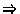

Vinay K. Chaudhri
Artificial Intelligence Center
SRI International
Adam Farquhar
Knowledge Systems Laboratory
Stanford University
Richard Fikes
Knowledge Systems Laboratory
Stanford University
Peter D. Karp
Artificial Intelligence Center
SRI International
James P. Rice
Knowledge Systems Laboratory
Stanford University
April 9, 1998
This document specifies a protocol for accessing knowledge bases (KBs) stored in knowledge representation systems (KRSs). By KRS we mean both systems that would traditionally be considered KRSs, as well as can be viewed as a KRS, for example, an object-oriented database. The protocol, called the Open Knowledge Base Connectivity (OKBC), provides a set of operations for a generic interface to underlying KRSs. The interface layer allows an application some independence from the idiosyncrasies of specific KRS software and enables the development of generic tools (e.g., graphical browsers and editors) that operate on many KRSs. OKBC implementations exist for several programming languages, including Java, C (client implementation only), and Common Lisp, and provide access to KBs both locally and over a network.
OKBC is complementary to language specifications developed to support knowledge sharing. KIF [4], the Knowledge Interchange Format, provides a declarative language for describing knowledge. As a pure specification language, KIF does not include commands for knowledge base query or manipulation. Furthermore, KIF is far more expressive than most KRSs. OKBC focuses on operations that are efficiently supported by most KRSs (e.g., operations on frames, slots, facets -- inheritance and slot constraint checking). OKBC is intended to be well impedance-matched to the sorts of operations typically performed by applications that view or manipulate object-oriented KRSs.
There are several motivations for creating a generic access and manipulation layer for KRS services. An application programmer may wish to use more than one KRS during the life of an application. An application that initially used the representation services of KRS1might later use KRS2 because KRS2 is faster, more expressive, cheaper, or better supported. Or, an application might use KRS2in addition to KRS1 -- KRS2 might be more expressive for a subset of tasks, or the application might later require access to a KB that was implemented using KRS2. In addition, OKBC supports reuse and composition of multiple ontologies and KBs. OKBC also allows users to reuse tools and utilities across various KRSs and applications, such as graphical knowledge editors or machine-learning programs.
Although there are significant differences among KRS implementations, there are enough common properties that we can describe a common knowledge model and an API for KRSs. An application or tool written to use these operations has the potential of portability over a variety of KRSs and knowledge bases.
OKBC specifies a knowledge model of KRSs (with KBs, classes, individuals, slots, and facets). It also specifies a set of operations based on this model (e.g., find a frame matching a name, enumerate the slots of a frame, delete a frame). An application uses these operations to access and modify knowledge stored in a OKBC-compliant KRS.
The current implementations of OKBC is object-oriented: methods in the appropriate object-oriented programming language for an application are used to implement OKBC operations. We refer to the set of methods that implement the protocol for a particular KRS as a back end. Many OKBC operations have default implementations written in terms of other OKBC operations; therefore, the programmer need define only a core subset of all OKBC operations in order to implement a compliant back end. These OKBC operations are called mandatory, and they comprise the OKBC kernel. The default implementations can be overridden within a given back end to improve efficiency.
The design objectives for OKBC are as follows.
Simplicity: It is important to have a relatively simple specification that can be implemented quickly, even if that means sacrificing theoretical considerations or support for idiosyncrasies of a particular KRS.
Generality: The protocol should apply to many KRSs, and support all the most common KRS features. For example, it should support all the knowledge access and modification functionality that will be required by a graphical KB editor.
No legislation: The protocol should not require numerous changes to an KRS for which the protocol is implemented. That is, the protocol should not legislate the behavior of an underlying KRS, but should serve as an interface between an existing KRS and an application.
Performance: Inserting the protocol between an application and a KRS should not introduce a significant performance cost.
Consistency: The protocol should exhibit consistent behavior across different KRSs. That is, a given sequence of operations within the protocol should yield semantically equivalent results over a range of KRSs.
Precision: The specification of the protocol should be as precise and unambiguous as possible.
Extensibility: The protocol must support the variability in capabilities of KRSs, and the need to add new KRS features over time without penalizing users of less powerful systems.
Satisfying all of these objectives simultaneously is impossible because many of them conflict, such as simplicity and precision, simplicity and generality, and generality and performance. The deepest conflicts, however, exist simultaneously between generality, no-legislation, performance, consistency, and precision, as the following example shows. To specify the behavior of the operation that retrieves the values of a slot precisely and completely, we would have to specify exactly how the local values of a slot are combined with the inherited values of a slot (which may be inherited from multiple parent classes). That is, we would have to specify the exact inheritance mechanism that the protocol expects. Yet, different KRSs use a variety of different inheritance mechanisms [7]. For a KRS to conform to a precise specification of inheritance, it might be required either to alter its inheritance mechanism (violating no-legislation), or to emulate the desired inheritance mechanism within the implementation of the protocol (violating high performance and generality, since the inheritance method used by that KRS would then be inaccessible through the protocol).
The preceding quandary is central throughout the protocol, and we know of no simple solution to the problem. Our approach is for each OKBC implementation to advertise programmatically the capabilities that it provides. Each KB manipulated by the protocol is serviced directly by a single underlying KRS. The OKBC implementation for that KRS must declare what set of OKBC behaviors the implementation can support, and under what set of behaviors it is operating currently. For example, the implementation might declare that it can support only one of the two semantics for the behavior :inheritance, which we call :when-consistent and :override. (If it can support only the :when-consistent behavior, for example, then it must be currently operating under that behavior.) OKBC predefines alternative KRS behaviors, based on the properties of existing KRSs. The application can interrogate the implementation at any time it feels appropriate to determine which of several actions the application might take, or whether it needs to change the current behavior of the underlying KRS.
Many operations in the protocol use language such as, ``The operation returns at least the values derivable from the definition of direct assertions.'' This language defines a lower bound on the capability of any compliant OKBC implementation. An implementation is at liberty to deliver more results as long as they are logically consistent with the documentation of the operation. In this example, we are saying that the server must be aware of the class-subclass and class-instance relationships in the KB, and must perform logically correct taxonomic inferences. The same OKBC implementation is at liberty to perform arbitrary theorem proving as well as the minimal specified inferences. Such theorem proving may well derive other values in addition to those derived by taxonomic inference.
The goal of OKBC is to serve as an interface to many different KRSs. In a review of KRSs, Karp identified more than 50 of these systems [7]. He also observed that there is a lack of agreement regarding terminology in the field of knowledge representation because different researchers often use different terms to mean the same thing, and use the same term to mean different things. For example, there are 10 different terms for the notion of a class, 4 terms for an individual, 4 terms for the relationship between a concept and an individual, 3 terms for the notion of slot values, and 2 terms for the slot and for the slot frame.
The operations within OKBC require names. It is clearly impossible to choose a set of names for the protocol operations that will be considered ideal by the developers of every KRS. We ask readers of this document who are considering adapting the OKBC to their KRS to recognize these facts, and to be tolerant of the terminology herein.
OKBC is a successor of Generic Frame Protocol (GFP) which was primarily aimed at systems that can be viewed as frame representation systems. GFP was originally motivated by a review of KRSs authored by Peter Karp [7], by related earlier work by Barnett and colleagues [1], and by specifications used at the Stanford Knowledge Systems Laboratory for accessing Cyc [11], KEE [10], and Epikit. Karp and Tom Gruber began developing OKBC in 1993 for use with the EcoCyc [6], GKB Editor [9], and Ontolingua projects [3]. In 1995 Karp et al. authored a publication describing the version of OKBC in use at that time [8]. The protocol has undergone many revisions, based on input from many people, including Fritz Mueller, Karen Myers, Suzanne Paley, and Robert MacGregor.
The OKBC Knowledge Model includes constants, frames, slots, facets, classes, individuals, and knowledge bases. We describe each of these constructs in the sections below. To provide a precise and succinct description of the OKBC Knowledge Model, we use the Knowledge Interchange Format (KIF) [4] as a formal specification language. KIF is a first-order predicate logic language with set theory, and has a linear prefix syntax.
Classes are sets of entities2.1, and all sets of entities are considered to be classes. OKBC also assumes that the domain of discourse includes the logical constants true and false.
A frame has associated with it a set of own slots, and each own slot of a frame has associated with it a set of entities called slot values. Formally, a slot is a binary relation, and each value V of an own slot S of a frame F represents the assertion that the relation S holds for the entity represented by F and the entity represented by V (i.e., (S F V)2.2). For example, the assertion that Fred's favorite foods are potato chips and ice cream could be represented by the own slot Favorite-Food of the frame Fred having as values the frame Potato-Chips and the string ``ice cream''.
An own slot of a frame has associated with it a set of own facets, and each own facet of a slot of a frame has associated with it a set of entities called facet values. Formally, a facet is a ternary relation, and each value V of own facet Fa of slot S of frame Fr represents the assertion that the relation Fa holds for the relation S, the entity represented by Fr, and the entity represented by V (i.e., (Fa S Fr V)). For example, the assertion that the favorite foods of Fred must be edible foods could be represented by the facet :VALUE-TYPE of the Favorite-Food slot of the Fred frame having the value Edible-Food.
Relations may optionally be entities in the domain of discourse and therefore representable by frames. Thus, a slot or a facet may be represented by a frame. Such a frame describes the properties of the relation represented by the slot or facet. A frame representing a slot is called a slot frame, and a frame representing a facet is called a facet frame.
Entities that are not classes are referred to as individuals. Thus, the domain of discourse consists of individuals and classes. The unary relation class is true if and only if its argument is a class and the unary relation individual is true if and only if its argument is an individual. The following axiom holds:2.3
(<=> (class ?X) (not (individual ?X)))
The class membership relation (called instance-of) that holds between an instance and a class is a binary relation that maps entities to classes. A class is considered to be a unary relation that is true for each instance of the class. That is,2.4
(<=> (holds ?C ?I) (instance-of ?I ?C))
The relation type-of is defined as the inverse of relation instance-of. That is,
(<=> (type-of ?C ?I) (instance-of ?I ?C))
The subclass-of relation for classes is defined in terms of the relation instance-of, as follows. A class Csub is a subclass of class Csuper if and only if all instances of Csub are also instances of Csuper. That is,2.5
(<=> (subclass-of ?Csub ?Csuper)
(forall ?I (=> (instance-of ?I ?Csub)
(instance-of ?I ?Csuper))))
Note that this definition implies that subclass-of is transitive. (I.e., If A is a subclass of B and B is a subclass of C, then A is a subclass of C.)
The relation superclass-of is defined as the inverse of the relation subclass-of. That is,
(<=> (superclass-of ?Csuper ?Csub) (subclass-of ?Csub ?Csuper))
(=> (template-slot-value ?S ?C ?V)
(and (=> (instance-of ?I ?C) (holds ?S ?I ?V))
(=> (subclass-of ?Csub ?C)
(template-slot-value ?S ?Csub ?V))))
Thus, the values of a template slot are inherited to subclasses as values of the same template slot and to instances as values of the corresponding own slot. For example, the assertion that the gender of all female persons is female could be represented by template slot Gender of class frame Female-Person having the value Female. Then, if we created an instance of Female-Person called Mary, Female would be a value of the own slot Gender of Mary.
A template slot of a class frame has associated with it a collection of template facets that describe own facet values considered to hold for the corresponding own slot of each instance of the class represented by the class frame. As with the values of template slots, the values of template facets are said to inherit to the subclasses and instances of a class. Formally, each value V of a template facet F of a template slot S of a class frame C represents the assertion that the relation template-facet-value holds for the relations F and S, the class represented by C, and the entity represented by V (i.e., (template-facet-value F S C V)). That assertion, in turn, implies that the relation F holds for relation S, each instance I of class C, and value V (i.e., (F S I V)). It also implies that the relation template-facet-value holds for the relations S and F, each subclass Csub of class C, and the entity represented by V (i.e., (template-facet-value F S Csub V)).
In general, the following facet value inheritance axiom holds for the relation template-facet-value:
(=> (template-facet-value ?F ?S ?C ?V)
(and (=> (instance-of ?I ?C) (holds ?F ?S ?I ?V))
(=> (subclass-of ?Csub ?C)
(template-facet-value ?F ?S ?Csub ?V))))
Thus, the values of a template facet are inherited to subclasses as values of the same template facet and to instances as values of the corresponding own facet.
Note that template slot values and template facet values necessarily inherit from a class to its subclasses and instances. Default values and default inheritance are specified separately, as described in Section 2.8.
Classes are considered to be either primitive or non-primitive by OKBC. The template slot values and template facet values associated with a non-primitive class are considered to specify a set of necessary and sufficient conditions for being an instance of the class. For example, the class Triangle could be a non-primitive class whose template slots and facets specify three-sided polygons. All triangles are necessarily three-sided polygons, and knowing that an entity is a three-sided polygon is sufficient to conclude that the entity is a triangle.
The template slot values and template facet values associated with a primitive class are considered to specify only a set of necessary conditions for an instance of the class. For example, all classes of ``natural kinds'' - such as Horse and Building - are primitive concepts. A KB may specify many properties of horses and buildings, but will typically not contain sufficient conditions for concluding that an entity is a horse or building.
Formally:
(=> (and (class ?C) (not (primitive ?C)))
(=> (and (=> (template-slot-value ?S ?C ?V) (holds ?S ?I ?V))
(=> (template-facet-value ?F ?S ?C ?V)
(holds ?F ?S ?I ?V)))
(instance-of ?I ?C)))
We formalize the association of slots with frames and facets with frame-slot pairs by defining the relations slot-of, template-slot-of, facet-of, and template-facet-of as follows:
(=> (exists ?V (holds ?Fa ?S ?F ?V)) (facet-of ?Fa ?S ?F))
(=> (exists ?V (template-facet-value ?Fa ?S ?C ?V))
(template-facet-of ?Fa ?S ?C))
(=> (or (exists ?V (holds ?S ?F ?V))
(exists ?Fa (facet-of ?Fa ?S ?F)))
(slot-of ?S ?F))
(=> (or (exists ?V (template-slot-value ?S ?C ?V))
(exists ?Fa (template-facet-of ?Fa ?S ?C)))
(template-slot-of ?S ?C))
So, in the example given above, the following sentences would be true: (template-slot-of Age Person) and (template-facet-of :NUMERIC-MINIMUM Age Person).
As with template facet values and template slot values, the template-slot-of and template-facet-of relations inherit from a class to its subclasses and from a class to its instances as the slot-of and facet-of relations. That is, the following slot-of inheritance axioms hold.
(=> (template-slot-of ?S ?C)
(and (=> (instance-of ?I ?C) (slot-of ?S ?I))
(=> (subclass-of ?Csub ?C) (template-slot-of ?S ?Csub))))
(=> (template-facet-of ?Fa ?S ?C)
(and (=> (instance-of ?I ?C) (facet-of ?Fa ?S ?I))
(=> (subclass-of ?Csub ?C)
(template-facet-of ?Fa ?S ?Csub))))
OKBC allows multiple values of a slot or facet to be interpreted as a collection type other than a set. The protocol recognizes three collection types: set, bag, and list. A bag is an unordered collection with possibly multiple occurrences of the same value in the collection. A list is an ordered bag.
The OKBC Knowledge Model considers multiple slot and facet values to be sets throughout because of the lack of a suitable formal interpretation for (1) multiple slot or facet values treated as bags or lists, (2) the ordering of values in lists of values that result from multiple inheritance, and (3) the multiple occurrence of values in bags that result from multiple inheritance. In addition, the protocol itself makes no commitment as to how values expressed in collection types other than set are combined during inheritance. Thus, OKBC guarantees that multiple slot and facet values of a frame stored as a bag or a list are retrievable as an equivalent bag or list at that frame. However, when the values are inherited to a subclass or instance, no guarantees are provided regarding the ordering of values for lists or the repeating of multiple occurrences of values for bags. The collection types supported by a KRS can be specified by a behavior (see Section 4.1.7) and the collection type of a slot of a specific frame can be specified by using the :COLLECTION-TYPE facet (see Section 2.10.2).
The OKBC Knowledge Model includes a collection of classes, facets, and slots with specified names and semantics. It is not required that any of these standard classes, facets, or slots be represented in any given KB, but if they are, they must satisfy the semantics specified here.
The purpose of these standard names is to allow for KRS- and KB-independent canonical names for frequently used classes, facets, and slots. The canonical names are needed because an application cannot in general embed literal references to frames in a KB and still be portable. This mechanism enables such literal references to be used without compromising portability.
:THING class
:THING is the root of the class hierarchy for a KB, meaning that
:THING is the superclass of every class in every KB.
:CLASS class
:CLASS is the class of all classes. That is, every entity that is
a class is an instance of :CLASS.
:INDIVIDUAL class
:INDIVIDUAL is the class of all entities that are not classes.
That is, every entity that is not a class is an instance of :INDIVIDUAL.
:NUMBER class
:NUMBER is the class of all numbers. OKBC makes no guarantees
about the precision of numbers. If precision is an issue for an
application, then the application is responsible for maintaining and
validating the format of numerical values of slots and facets.
:NUMBER is a subclass of :INDIVIDUAL.
:INTEGER class
:INTEGER is the class of all integers and is a subclass of
:NUMBER. As with numbers in general, OKBC makes no guarantees about the
precision of integers.
:STRING class
:STRING is the class of all text strings. :STRING is a
subclass of :INDIVIDUAL.
:SYMBOL class
:SYMBOL is the class of all symbols. :SYMBOL is a subclass
of :SEXPR.
:LIST class
:LIST is the class of all lists. :LIST is a subclass of
:INDIVIDUAL.
:VALUE-TYPE facet
The :VALUE-TYPE facet specifies a type restriction on the values
of a slot of a frame. Each value of the :VALUE-TYPE facet denotes
a class. A value C for facet :VALUE-TYPE of slot S of frame F
means that every value of slot S of frame F must be an instance of the
class C. That is,
(=> (:VALUE-TYPE ?S ?F ?C)
(and (class ?C)
(=> (holds ?S ?F ?V) (instance-of ?V ?C))))
(=> (template-facet-value :VALUE-TYPE ?S ?F ?C)
(and (class ?C)
(=> (template-slot-value ?S ?F ?V) (instance-of ?V ?C))))
The first axiom provides the semantics of the :VALUE-TYPE facet for own slots and the second provides the semantics for template slots. Note that if the :VALUE-TYPE facet has multiple values for a slot S of a frame F, then the values of slot S of frame F must be an instance of every class denoted by the values of :VALUE-TYPE.
A value for :VALUE-TYPE can be a KIF term of the following form:
<value-type-expr> ::= (union <OKBC-class>*) | (set-of <OKBC-value>*) |
OKBC-class
A OKBC-class is any entity X for which (class X) is true or that is a standard OKBC class described in Section 2.10.1. A OKBC-value is any entity. The union expression allows the specification of a disjunction of classes (e.g., either a dog or a cat), and the set-of expression allows the specification of an explicitly enumerated set of possible values for the slot (e.g., either Clyde, Fred, or Robert).
:INVERSE facet
The :INVERSE facet of a slot of a frame specifies inverses
for that slot for the values of the slot of the frame. Each value of
this facet is a slot. A value S2 for facet :INVERSE of slot
S1 of frame F means that if V is a value of S1 of F, then F is a value
of S2 of V. That is,
(=> (:INVERSE ?S1 ?F ?S2)
(and (:SLOT ?S2)
(=> (holds ?S1 ?F ?V) (holds ?S2 ?V ?F))))
(=> (template-facet-value :INVERSE ?S1 ?F ?S2)
(and (:SLOT ?S2)
(=> (template-slot-value ?S1 ?F ?V)
(template-slot-value ?S2 ?V ?F))))
:CARDINALITY facet
The :CARDINALITY facet specifies the exact number of values that
may be asserted for a slot on a frame. The value of this facet must be a
nonnegative integer. A value N for facet :CARDINALITY on slot S
on frame F means that slot S on frame F has N values. That
is,2.6
(=> (:CARDINALITY ?S ?F ?N)
(= (cardinality (setofall ?V (holds ?S ?F ?V))) ?N))
(=> (template-facet-value :CARDINALITY ?S ?F ?C)
(=< (cardinality (setofall ?V (template-slot-value ?S ?F ?V))
?N)))
For example, one could represent the assertion that Fred has exactly four brothers by asserting 4 as the value of the :CARDINALITY own facet of the Brother own slot of frame Fred. Note that all the values for slot S of frame F need not be known in the KB. That is, a KB could use the :CARDINALITY facet to specify that Fred has 4 brothers without knowing who the brothers are and therefore without providing values for Fred's Brother slot.
Also, note that a value for :CARDINALITY as a template facet of a template slot of a class only constrains the maximum number of values of that template slot of that class, since the corresponding own slot of each instance of the class may inherit values from multiple classes and have locally asserted values.
:MAXIMUM-CARDINALITY facet
The :MAXIMUM-CARDINALITY facet specifies the maximum number of
values that may be asserted for a slot of a frame. Each value of this
facet must be a nonnegative integer. A value N for facet MAXIMUM-CARDINALITY of slot S of frame F means that slot S of frame F
can have at most N values. That is,
(=> (:MAXIMUM-CARDINALITY ?S ?F ?N)
(=< (cardinality (setofall ?V (holds ?S ?F ?V))) ?N))
(=> (template-facet-value :MAXIMUM-CARDINALITY ?S ?F ?C)
(=< (cardinality (setofall ?V (template-slot-value ?S ?F ?V))
?N)))
Note that if facet :MAXIMUM-CARDINALITY of a slot S of a frame F has multiple values N1,,Nk, then S in F can have at most (min N1 Nk) values. Also, it is appropriate for a value for :MAXIMUM-CARDINALITY as a template facet of a template slot of a class to constrain the number of values of that template slot of that class as well as the number of values of the corresponding own slot of each instance of that class since an excess of values for a template slot of a class will cause an excess of values for the corresponding own slot of each instance of the class.
:MINIMUM-CARDINALITY facet
The :MINIMUM-CARDINALITY facet specifies the minimum number of
values that may be asserted for a slot of a frame. Each value of this
facet must be a nonnegative integer. A value N for facet MINIMUM-CARDINALITY of slot S of frame F means that slot S of frame F
has at least N values. That is, 2.7
(=> (:MINIMUM-CARDINALITY ?S ?F ?N)
(>= (cardinality (setofall ?V (holds ?S ?F ?V))) ?N))
Note that if facet :MINIMUM-CARDINALITY of a slot S of a frame F has multiple values N1,,Nk, then S of F has at least (max N1 Nk) values. Also, as is the case with the :CARDINALITY facet, all the values for slot S of frame F do not need be known in the KB.
Note that a value for :MINIMUM-CARDINALITY as a template facet of a template slot of a class does not constrain the number of values of that template slot of that class, since the corresponding own slot of each instance of the class may inherit values from multiple classes and have locally asserted values. Instead, the value for the template facet :MINIMUM-CARDINALITY constrains only the number of values of the corresponding own slot of each instance of that class, as specified by the axiom.
:SAME-VALUES facet
The :SAME-VALUES facet specifies that a slot of a frame has
the same values as other slots of that frame or as the values
specified by slot chains starting at that frame. Each value of
this facet is either a slot or a slot chain. A value S2 for facet
:SAME-VALUES of slot S1 of frame F, where S2 is a slot, means
that the set of values of slot S1 of F is equal to the set of values
of slot S2 of F. That is,
(=> (:SAME-VALUES ?S1 ?F ?S2)
(= (setofall ?V (holds ?S1 ?F ?V))
(setofall ?V (holds ?S2 ?F ?V))))
A slot chain is a list of slots that specifies a nesting of slots. That is, the values of the slot chain S1,,Sn of frame F are the values of the Sn slot of the values of the Sn-1 slot of of the values of the S1 slot in F. For example, the values of the slot chain (parent brother) of Fred are the brothers of the parents of Fred. Formally, we define the values of a slot chain recursively as follows: Vn is a value of slot chain S1,,Sn of frame F if there is a value V1 of slot S1 of F such that Vn is a value of slot chain S2,,Sn of frame V1. That is,2.8
(<=> (slot-chain-value (listof ?S1 ?S2 @Sn) ?F ?Vn)
(exists ?V1 (and (holds ?S1 ?F ?V1)
(slot-chain-value (listof ?S2 @Sn) ?V1 ?Vn))))
(<=> (slot-chain-value (listof ?S) ?F ?V) (holds ?S ?F ?V))
A value (S1 Sn) for facet :SAME-VALUES of slot S of frame F means that the set of values of slot S of F is equal to the set of values of slot chain (S1 Sn) of F. That is,
(=> (:SAME-VALUES ?S ?F (listof @Sn))
(= (setofall ?V (holds ?S ?F ?V))
(setofall ?V (slot-chain-value (listof @Sn) ?F ?V))))
For example, one could assert that a person's uncles are the brothers of their parents by putting the value (parent brother) on the template facet :SAME-VALUES of the Uncle slot of class Person.
:NOT-SAME-VALUES facet
The :NOT-SAME-VALUES facet specifies that a slot of a frame
does not have the same values as other slots of that frame or as the
values specified by slot chains starting at that frame. Each value of
this facet is either a slot or a slot chain. A value S2 for facet
:NOT-SAME-VALUES of slot S1 of frame F, where S2 is a slot,
means that the set of values of slot S1 of F is not equal to the set
of values of slot S2 of F. That is,
(=> (:NOT-SAME-VALUES ?S1 ?F ?S2)
(not (= (setofall ?V (holds ?S1 ?F ?V))
(setofall ?V (holds ?S2 ?F ?V)))))
A value (S1 Sn) for facet :NOT-SAME-VALUES of slot S of frame F means that the set of values of slot S of F is not equal to the set of values of slot chain (S1 Sn) of F. That is,
(=> (:NOT-SAME-VALUES ?S ?F (listof @Sn))
(not (= (setofall ?V (holds ?S ?F ?V))
(setofall ?V (slot-chain-value (listof @Sn) ?F ?V)))))
:SUBSET-OF-VALUES facet
The :SUBSET-OF-VALUES facet specifies that the values of a
slot of a frame are a subset of the values of other slots of that
frame or of the values of slot chains starting at that frame. Each
value of this facet is either a slot or a slot chain. A value S2 for
facet :SUBSET-OF-VALUES of slot S1 of frame F, where S2 is a
slot, means that the set of values of slot S1 of F is a subset of the
set of values of slot S2 of F. That is,
(=> (:SUBSET-OF-VALUES ?S1 ?F ?S2)
(subset (setofall ?V (holds ?S1 ?F ?V))
(setofall ?V (holds ?S2 ?F ?V))))
A value (S1 Sn) for facet :SUBSET-OF-VALUES of slot S of frame F means that the set of values of slot S of F is a subset of the set of values of the slot chain (S1 Sn) of F. That is,
(=> (:SUBSET-OF-VALUES ?S ?F (listof @Sn))
(subset (setofall ?V (holds ?S ?F ?V))
(setofall ?V (slot-chain-value (listof @Sn) ?F ?V))))
:NUMERIC-MINIMUM facet
The :NUMERIC-MINIMUM facet specifies a lower bound on the
values of a slot whose values are numbers. Each value of the
:NUMERIC-MINIMUM facet is a number. This facet is defined as
follows:
(=> (:NUMERIC-MINIMUM ?S ?F ?N)
(and (:NUMBER ?N)
(=> (holds ?S ?F ?V) (>= ?V ?N))))
(=> (template-facet-value :NUMERIC-MINIMUM ?S ?F ?N)
(and (:NUMBER ?N)
(=> (template-slot-value ?S ?F ?V) (>= ?V ?N))))
:NUMERIC-MAXIMUM facet
The :NUMERIC-MAXIMUM facet specifies an upper bound on the values
of a slot whose values are numbers. Each value of this facet is a
number. This facet is defined as follows:
(=> (:NUMERIC-MAXIMUM ?S ?F ?N)
(and (:NUMBER ?N)
(=> (holds ?S ?F ?V) (=< ?V ?N))))
(=> (template-facet-value :NUMERIC-MAXIMUM ?S ?F ?N)
(and (:NUMBER ?N)
(=> (template-slot-value ?S ?F ?V) (=< ?V ?N))))
:SOME-VALUES facet
The :SOME-VALUES facet specifies a subset of the values of a
slot of a frame. This facet of a slot of a frame can have any value
that can also be a value of the slot of the frame. A value V for own
facet :SOME-VALUES of own slot S of frame F means that V is
also a value of own slot S of F. That is,
(=> (:SOME-VALUES ?S ?F ?V) (holds ?S ?F ?V))
:COLLECTION-TYPE facet
The :COLLECTION-TYPE facet specifies whether multiple values of a
slot are to be treated as a set, list, or bag. No axiomatization is
provided for treating multiple values as lists or bags because of the
lack of a suitable formal interpretation for the ordering of values in
lists of values that result from multiple inheritance and the multiple
occurrence of values in bags that result from multiple inheritance.
The protocol itself makes no commitment as to how values expressed in collection types other than set are combined during inheritance. Thus, OKBC guarantees that multiple slot and facet values stored at a frame as a bag or a list are retrievable as an equivalent bag or list at that frame. However, when the values are inherited to a subclass or instance, no guarantees are provided regarding the ordering of values for lists or the repeating of multiple occurrences of values for bags.
:DOCUMENTATION-IN-FRAME facet
:DOCUMENTATION-IN-FRAME is a facet whose values at a slot
for a frame are text strings providing documentation for that slot on
that frame. The only requirement on the :DOCUMENTATION facet
is that its values be strings.
:DOCUMENTATION slot
:DOCUMENTATION is a slot whose values at a frame are text strings
providing documentation for that frame. Note that the documentation
describing a class would be values of the own slot :DOCUMENTATION
on the class. The only requirement on the :DOCUMENTATION slot is
that its values be strings. That is,
(=> (:DOCUMENTATION ?F ?S) (:STRING ?S))
The slots described in this section can be associated with frames that represent slots. In general, these slots describe properties of a slot which hold at any frame that can have a value for the slot.
:DOMAIN slot
:DOMAIN specifies the domain of the binary relation represented by
a slot frame. Each value of the slot :DOMAIN denotes a class. A
slot frame S having a value C for own slot :DOMAIN means that
every frame that has a value for own slot S must be an instance of C,
and every frame that has a value for template slot S must be C or a
subclass of C. That is,
(=> (:DOMAIN ?S ?C)
(and (:SLOT ?S)
(class ?C)
(=> (holds ?S ?F ?V) (instance-of ?F ?C))
(=> (template-slot-value ?S ?F ?V)
(or (= ?F ?C) (subclass-of ?F ?C))))
If a slot frame S has a value C for own slot :DOMAIN and I is an instance of C, then I is said to be in the domain of S.
A value for slot :DOMAIN can be a KIF expression of the following form:
<domain-expr> ::= (union <OKBC-class>*) | OKBC-classA OKBC-class is any entity X for which (class X) is true or that is a standard OKBC class described in Section 2.10.1.
Note that if slot :DOMAIN of a slot frame S has multiple values C1,,Cn, then the domain of slot S is constrained to be the intersection of classes C1,,Cn. Every slot is considered to have :THING as a value of its :DOMAIN slot. That is,
(=> (:SLOT ?S) (:DOMAIN ?S :THING))
:SLOT-VALUE-TYPE slot
:SLOT-VALUE-TYPE specifies the classes of which values of a slot
must be an instance (i.e., the range of the binary relation
represented by a slot). Each value of the slot
:SLOT-VALUE-TYPE denotes a class. A slot frame S having a
value V for own slot :SLOT-VALUE-TYPE means that the own facet
:VALUE-TYPE has value V for slot S of any frame that is in the
domain of S. That is,
(=> (:SLOT-VALUE-TYPE ?S ?V)
(and (:SLOT ?S)
(=> (forall ?D (=> (:DOMAIN ?S ?D) (instance-of ?F ?D)))
(:VALUE-TYPE ?S ?F ?V))))
As is the case for the :VALUE-TYPE facet, the value for the :SLOT-VALUE-TYPE slot can be a KIF expression of the following form:
<value-type-expr> ::= (union <OKBC-class>*) | (set-of <OKBC-value>*) |
OKBC-class
A OKBC-class is any entity X for which (class X) is true or that is a standard OKBC class described in Section 2.10.1. A OKBC-value is any entity. The union expression allows the specification of a disjunction of classes (e.g., either a dog or a cat), and the set-of expression allows the specification of an explicitly enumerated set of values (e.g., either Clyde, Fred, or Robert).
:SLOT-INVERSE slot
:SLOT-INVERSE specifies inverse relations for a slot. Each value
of :SLOT-INVERSE is a slot. A slot frame S having a value V for
own slot :SLOT-INVERSE means that own facet :INVERSE has
value V for slot S of any frame that is in the domain of S. That is,
(=> (:SLOT-INVERSE ?S ?V)
(and (:SLOT ?S)
(=> (forall ?D (=> (:DOMAIN ?S ?D) (instance-of ?F ?D)))
(:INVERSE ?S ?F ?V))))
:SLOT-CARDINALITY slot
:SLOT-CARDINALITY specifies the exact number of values that may be
asserted for a slot for entities in the slot's domain. The value of
slot :SLOT-CARDINALITY is a nonnegative integer. A slot frame S
having a value V for own slot :SLOT-CARDINALITY means that own
facet :CARDINALITY has value V for slot S of any frame that is in
the domain of S. That is,
(=> (:SLOT-CARDINALITY ?S ?V)
(and (:SLOT ?S)
(=> (forall ?D (=> (:DOMAIN ?S ?D) (instance-of ?F ?D)))
(:CARDINALITY ?S ?F ?V))))
:SLOT-MAXIMUM-CARDINALITY slot
:SLOT-MAXIMUM-CARDINALITY specifies the maximum number of values
that may be asserted for a slot for entities in the slot's domain.
The value of slot :SLOT-MAXIMUM-CARDINALITY is a nonnegative
integer. A slot frame S having a value V for own slot
:SLOT-MAXIMUM-CARDINALITY means that own facet
:MAXIMUM-CARDINALITY has value V for slot S of any frame that
is in the domain of S. That is,
(=> (:SLOT-MAXIMUM-CARDINALITY ?S ?V)
(and (:SLOT ?S)
(=> (forall ?D (=> (:DOMAIN ?S ?D) (instance-of ?F ?D)))
(:MAXIMUM-CARDINALITY ?S ?Csub ?V))))
:SLOT-MINIMUM-CARDINALITY slot
:SLOT-MINIMUM-CARDINALITY specifies the minimum number of values
for a slot for entities in the slot's domain. The value of slot
:SLOT-MINIMUM-CARDINALITY is a nonnegative integer. A slot
frame S having a value V for own slot
:SLOT-MINIMUM-CARDINALITY means that own facet
:MINIMUM-CARDINALITY has value V for slot S of any frame that
is in the domain of S. That is,
(=> (:SLOT-MINIMUM-CARDINALITY ?S ?V)
(and (:SLOT ?S)
(=> (forall ?D (=> (:DOMAIN ?S ?D) (instance-of ?F ?D)))
(:MINIMUM-CARDINALITY ?S ?F ?V))))
:SLOT-SAME-VALUES slot
:SLOT-SAME-VALUES specifies that a slot has the same values as
either other slots or as slot chains for entities in the slot's domain.
Each value of slot :SLOT-SAME-VALUES is either a slot or a slot
chain. A slot frame S having a value V for own slot
:SLOT-SAME-VALUES means that own facet :SAME-VALUES
has value V for slot S of any frame that is in the domain of S. That is,
(=> (:SLOT-SAME-VALUES ?S ?V)
(and (:SLOT ?S)
(=> (forall ?D (=> (:DOMAIN ?S ?D) (instance-of ?F ?D)))
(:SAME-VALUES ?S ?F ?V)))
:SLOT-NOT-SAME-VALUES slot
:SLOT-NOT-SAME-VALUES specifies that a slot does not have the same
values as either other slots or as slot chains for entities in the
slot's domain. Each value of slot :SLOT-NOT-SAME-VALUES is either
a slot or a slot chain. A slot frame S having a value V for own slot
:SLOT-NOT-SAME-VALUES means that own facet :NOT-SAME-VALUES
has value V for slot S of any frame that is in the domain of S. That
is,
(=> (:SLOT-NOT-SAME-VALUES ?S ?V)
(and (:SLOT ?S)
(=> (forall ?D (=> (:DOMAIN ?S ?D) (instance-of ?F ?D)))
(:NOT-SAME-VALUES ?S ?F ?V)))
:SLOT-SUBSET-OF-VALUES slot
:SLOT-SUBSET-OF-VALUES specifies that the values of a slot are a
subset of either other slots or of slot chains for entities in the
slot's domain. Each value of slot :SLOT-SUBSET-OF-VALUES is
either a slot or a slot chain. A slot frame S having a value V for
own slot :SLOT-SUBSET-OF-VALUES means that own facet
:SUBSET-OF-VALUES has value V for slot S of any frame that is
in the domain of S. That is,
(=> (:SLOT-SUBSET-OF-VALUES ?S ?V)
(and (:SLOT ?S)
(=> (forall ?D (=> (:DOMAIN ?S ?D) (instance-of ?F ?D)))
(:SUBSET-OF-VALUES ?S ?F ?V)))
:SLOT-NUMERIC-MINIMUM slot
:SLOT-NUMERIC-MINIMUM specifies a lower bound on the values of a
slot for entities in the slot's domain. Each value of slot
:SLOT-NUMERIC-MINIMUM is a number. A slot frame S having a
value V for own slot :SLOT-NUMERIC-MINIMUM means that own
facet :NUMERIC-MINIMUM has value V for slot S of any frame
that is in the domain of S. That is,
(=> (:SLOT-NUMERIC-MINIMUM ?S ?V)
(and (:SLOT ?S)
(=> (forall ?D (=> (:DOMAIN ?S ?D) (instance-of ?F ?D)))
(:NUMERIC-MINIMUM ?S ?F ?V)))
:SLOT-NUMERIC-MAXIMUM slot
:SLOT-NUMERIC-MAXIMUM specifies an upper bound on the values of a
slot for entities in the slot's domain. Each value of slot
:SLOT-NUMERIC-MAXIMUM is a number. A slot frame S having a
value V for own slot :SLOT-NUMERIC-MAXIMUM means that own
facet :NUMERIC-MAXIMUM has value V for slot S of any frame
that is in the domain of S. That is,
(=> (:SLOT-NUMERIC-MAXIMUM ?S ?V)
(and (:SLOT ?S)
(=> (forall ?D (=> (:DOMAIN ?S ?D) (instance-of ?F ?D)))
(:NUMERIC-MAXIMUM ?S ?F ?V)))
:SLOT-SOME-VALUES slot
:SLOT-SOME-VALUES specifies a subset of the values of a slot for
entities in the slot's domain. Each value of slot
:SLOT-SOME-VALUES of a slot frame must be in the domain of the
slot represented by the slot frame. A slot frame S having a value V
for own slot :SLOT-SOME-VALUES means that own facet
:SOME-VALUES has value V for slot S of any frame that is in
the domain of S. That is,
(=> (:SLOT-SOME-VALUES ?S ?V)
(and (:SLOT ?S)
(=> (forall ?D (=> (:DOMAIN ?S ?D) (instance-of ?F ?D)))
(:SOME-VALUES ?S ?F ?V)))
:SLOT-COLLECTION-TYPE slot
:SLOT-COLLECTION-TYPE specifies whether multiple values of a slot
are to be treated as a set, list, or bag. Slot
:SLOT-COLLECTION-TYPE has one value, which is either set, list or bag. A slot frame S having a value V for own slot
:SLOT-COLLECTION-TYPE means that own facet
:COLLECTION-TYPE has
value V for slot S of any frame that is in the domain of S. That is,
(=> (:SLOT-COLLECTION-TYPE ?S ?V)
(and (:SLOT ?S)
(=> (forall ?D (=> (:DOMAIN ?S ?D) (instance-of ?F ?D)))
(:COLLECTION-TYPE ?S ?F ?V)))
In presenting the functional interface of OKBC, we first describe concepts that are common to many operations, including common arguments and standard ways to signal errors. Then we give an overview of all the OKBC operations, based on the type of objects on which they operate. To facilitate the use of OKBC with multiple programming languages we describe language bindings for C, Lisp, and Java. Finally, we list all the OKBC operations, along with their input arguments, return values, and descriptions.
The concept of KB behaviors, common to many OKBC operations, is described in detail in Chapter 4. On the first reading of this chapter, any references to KB behaviors can be safely ignored.
OKBC assumes a client-server architecture for application development. The client and server can be on different machines, on the same machine but in a different address space, or on the same machine and in the same address space. When the OKBC client and server are on different machines, they communicate via the OKBC transport layer. The OKBC transport layer can be implemented by direct procedure calls if the client and server are in the same address space, or any of the standard network protocols (e.g., CORBA or TCP/IP).
Using OKBC, a client application can access any KRS that supports a OKBC server. OKBC enables an application to access multiple OKBC servers, each of which may support multiple KRSs, which in turn may provide access to multiple KBs. For example, an application that merged multiple KBs could access a LOOM KB on one server, two Ontolingua KBs on a second server, and place the result in a Classic KB on a third server.
To access a KB, an application loads the OKBC client library for the appropriate programming language. For instance, an application written in the Java programming language would be compiled with the OKBC Java client library. The client library defines Java methods for all of the OKBC operations. It also defines Java classes to implement all of the OKBC entities, and conditions to implement all of the OKBC conditions.
To access a OKBC server, a client application typically undertakes the following steps. First, the application must establish a connection to a OKBC server (using establish-connection3.1). Second, the application may find out the set of KRSs that the server supports on that connection (using get-kb-types). Third, the application can get information about the KBs of a given type that can be opened on the connection (using openable-kbs). Finally, the application can either open a specific KB (using open-kb) or create a new one (using create-kb). The application may now query and manipulate the KB by executing OKBC operations. For example, it can look for specific frames (using get-frames-matching), find the root classes of the KB (using get-kb-roots, create new frames (using create-frame), and save changes (using save-kb).
A back end implementor implements the OKBC operations by using the KRS's native API. Whenever there is no direct mapping between a OKBC operation and some operation in the native API, the back end may invoke multiple operations in the native API or perform some runtime translation between the constructs of OKBC and the constructs supported by underlying KRS. For example, LOOM supports a concept definition language but no facets. It is possible to translate the LOOM concept definition language into OKBC facets, for example, the :at-most concept constructor of LOOM is translated into the :maximum-cardinality facet.
There is considerable redundancy in OKBC operations -- some operations can be implemented in terms of others. For example, consider the operations class-p and individual-p that check whether an entity is a class or on individual. If we define either of these two operations, it can be used to define the other, because the domain of discourse is partitioned into classes and individuals. The minimal set of OKBC operations that must be implemented, also known as mandatory methods, is known as a kernel. Because of this redundancy, an implementor can choose a kernel that most closely matches the native API of a KRS.
It is possible to develop a system that implements the complete protocol using a set of kernel operations. At least two such system have been implemented. As a consequence, a KRS developer can implement a complete OKBC-compliant system by implementing only the kernel operations. This may lead to some loss in efficiency because some non-kernel operations may have more efficient implementation in terms of the native API of a KRS. For example, the operation get-kb-classes can be implemented using get-kb-frames and class-p operations. Systems that store an explicit list of classes can return this result more efficiently.
KRS developers can also support subsets of OKBC behavior in their back ends, and then advertise this using the behaviors mechanism (see Section 4.1). For instance, a back end might only define read-only operations on a KB. This further reduces the initial effort required to implement OKBC.
Many OKBC operations, (for example, slot-p) are predicates on their arguments, and the value returned by them is a boolean truth value. All of these operations are named consistently with ``-p'' as a suffix. For example, slot-p is a predicate that is true for slots, and class-p is a predicate that is true for classes. When we say that an operation returns a boolean result, we mean that it returns either the OKBC value false, which is to be interpreted as the boolean value false, or some non-false value is returned that is interpreted as the boolean true. Although such a truth-deciding value will frequently be the OKBC value true, the only guarantee is that it will not be false. In some language implementations, the OKBC values true and false may not be the same as the native language values for true and false.
We use a standard format for describing the OKBC operations in Section 3.7. To explain this format, we use an example description of the get-slot-values operation as shown in Figure 3.1.
Name. The first element is the name of the operation.
Argument list. The arguments are specified using the Common Lisp conventions. The argument list is divided into two groups, separated by the ``&key'' indicator. Mandatory arguments precede ``&key''. These arguments must be provided in all language bindings. The keyword (named) arguments follow the ``&key'' indicator. In Section 3.6, we discuss language bindings that show how the keyword arguments should be interpreted for languages such as C that do not support keyword arguments. In some language bindings, the keyword arguments may be optional. In language bindings that support optional keyword arguments (for example, Java), default values will be supplied for the optional keyword arguments. The specification of an optional keyword argument is either (1) a list whose first element is the argument name and whose second element is the default value or (2) the argument name. Otherwise, the argument defaults to false.
For example, kb-local-only-p defaults to false, and inference-level defaults to :taxonomic.
Return values. Following `` '' are the values returned by the operation or void if no value is returned. The operations may return more than one value. For example, get-slot-values returns three values -- a list containing the requested slot values, exact-p and more-status.
Flags. Each operation has a set of descriptive flags to indicate (1) whether there is a corresponding enumerator operation3.2 (E), (2) whether it is mandatory, optional or neither3.3 in the current implementations (M or O or I), and (3) if it is read-only or writes to the KB (R or W). For example, get-slot-values has an enumerator, is read-only, and is optional in the current implementation.
Documentation. The documentation defines the meaning of the operations. For brevity, common arguments, such as inference-level, and common return values, such as more-status, are not described in the individual operation definitions, but in Sections 3.3 and 3.5. Arguments, return values, and OKBC operations are in this font.
A value of :direct for inference-level is guaranteed to return at least directly asserted values, because in some systems, such as, forward chaining systems -- values in addition to the directly asserted values may also be returned. Some OKBC operations, for example, an operation returning superclasses of a class may eliminate redundant values from the result. To help an application determine when exactly the directly asserted values are returned, all operations taking an :inference-level argument will return a second value (the first value being the result of the operation), exact-p, which is true if it is known that exactly the :direct or :taxonomic values is returned. A OKBC implementation that always returns false as the value of exact-p is compliant, but implementors are encouraged to return true whenever possible.
When number-of-values is :all; the value of more-status is either false, which indicates that there are known to be no more results, or :more, which indicates that there may still theoretically be more results, but the KRS was unable to find any more. When number-of-values is :all, a more-status value of :more means that the system cannot guarantee that it can access all possible results requested by the OKBC operation.
If the number-of-values argument is a positive integer, then no more results than the specified number will be returned. The more-status will be one of the following three possible values.
|
As discussed in the knowledge model, OKBC provides a facility to store and retrieve default values. Therefore, while adding a value to a slot or a facet, one may specify whether the value being added is a default value. Similarly, while retrieving values from a slot (or facet) of a frame, one may choose whether default values should be returned. This control is provided by the value-selector argument. The argument value-selector may take one of the following three values.
Many OKBC operations need to perform comparisons. For example, while removing a slot value, we need to compare the value to be removed with the existing slot values. OKBC operations requiring such comparisons support a test argument whose value is one of :eql, :equal, :equalp, or a procedure that should be used in the comparisons. The test argument defaults to :equal. The functions invoked for the values :eql, :equal, and :equalp are eql-in-kb, equal-in-kb, and equalp-in-kb respectively. The arguments to a test procedure are the two entities to be compared, and the KB for which the comparison should be performed, and kb-local-only-p (discussed in Section 3.5.2). The test function should return either true or false. Supplying a function in the native programming language as a value of test is not portable especially in network applications.
To support the development of robust applications, some standard means for processing error conditions are desirable. Whenever possible, OKBC operations that experience erroneous conditions or arguments signal errors. OKBC uses condition signals that are analogous to COMMON LISP conditions or Java exceptions. Condition signals are defined for commonly occurring error situations. OKBC provides a user with some control over when the errors should be signaled. A comprehensive list of standard OKBC errors is available in Section 3.8.
The OKBC errors are said to be either continuable or not. An error is said to be continuable only if the state of the KB is not known to have been changed by the error in such a way that the behavior of subsequent OKBC operations becomes undefined. Thus, although the signaling of a continuable error will interrupt any processing currently being performed, subsequent OKBC calls will be unaffected. After a non-continuable error, the state of the KB and the behavior of the KRS and application are undefined. The operation continuable-error-p returns true only for continuable error objects, and is false otherwise.
The error behavior of OKBC operations is specified in one of the following four ways: ``is an error'', ``error is signaled'', ``unspecified behavior'', ``is not portable''.
Whenever we say that ``it is an error'' for some situation to occur, it means that no valid OKBC program should cause that situation to occur; if it occurs, the effects and results are completely undefined. No OKBC-compliant implementation is required to detect such errors, but implementors are encouraged to detect such errors when possible. In some cases we also specify the condition that should be signaled if an implementation decides to signal one and has choice over which error is signaled.
When we say that an ``error is signaled'' in a situation, any OKBC-compliant implementation must signal an error of the specified type when that situation is encountered.
When we say that ``behavior is unspecified'' for a given situation, it means that a OKBC-compliant system may or may not treat that situation as an error.
An example of a situation where the behavior is unspecified is the function replace-slot-value that replaces an existing slot value with another. The definition of replace-slot-value does not specify whether an error should be signaled when the slot value to be replaced is not a current value of the slot, or if the new value to be added is already a value of the slot. This approach simplifies the implementation and speeds performance since each underlying KRS may make different assumptions about signaling behavior.
When we say that a particular usage is not portable, we mean that an application may legally operate in this state, but even if correct behavior is observed, it is not guaranteed to be the case if the application is directed at a different knowledge base (KB) of the same KRS, or the same KB with different behavior settings, or a KB resident in a different KRS (even with the same content), or a KB connected over a network. For example, many KBs uniquely identify frames by their names. For a KB with a value true for the behavior :frame-names-required, a frame name may be used as a valid argument for any operation that accepts a frame argument. Since the :frame-names-required behavior can be false for some KBs, such usage is not portable, because a frame name will not always be a valid argument for an operation that accepts a frame argument.
The general rule is that a standard OKBC error will be signaled when the documented exceptions occur. If, for example, the user attempts to retrieve slot values from a frame that does not exist, by using a call to the function get-slot-values, the error not-coercible-to-frame is signaled. Errors can also be signaled when slot constraints are violated. When a constraint violation occurs, the KRS should signal one of the conditions defined for constraint violations.
In two situations, an application program needs explicit control of whether an error should be signaled. An example of the first situation is the function coerce-to-frame that coerces a given object to a frame. In general, coerce-to-frame signals an error if the input object cannot be coerced to a frame. But a user program may not wish an error to be signaled if it is not sure if the input object is indeed coercible to a frame. The second situation is encountered in functions such as copy-frame that perform multiple operations. For such functions, a user may wish to continue copying even if there is an error, in which case the copy-frame continues copying as much as possible.
To provide such control, a few OKBC operations accept an error-p argument. The default value for error-p is true, in which case the errors are signaled as usual. If error-p is false, the operation catches at least the documented conditions and continues execution if possible.
The OKBC operations accepting the error-p argument return a second status value, in addition to the usual return value. When the second value is true, and error-p is false, it means that execution completed successfully.
We categorize all the OKBC operations based on the type of objects in which they operate. We introduce here any new concepts that are necessary for understanding those operations, and list operations in each category. Detailed descriptions of all operations are in Section 3.7.
Depending on the nature of the communication and the security model involved, different types of connection are used to perform the mediation between a OKBC client and a server. For example, if a OKBC server requires user authentication, the client will have to fulfill the authentication requirement before being able to establish a connection. The OKBC specification does not provide a detailed definition of connections since the specific behavior of the connections will be a function of the communication, threading, locking, and security models used by the server. A provider of a OKBC server is required to make the definition of its supported connection types available to the authors of OKBC client programs.
The connection operations are: all-connections, close-connection, connection-p, establish-connection, local-connection
With each KB in a KRS, we associate a OKBC KB-object and a KB-locator. A KB-object uniquely identifies a KB (discussed below) in a OKBC application. A KB-locator is a frame in the meta-KB and contains sufficient information to locate and open the KB. For example, for a KB residing in a file, a KB-locator may contain the name of the KB and its pathname. In effect, a kb-locator is to a KB as a filename is to a file. OKBC operations requiring a kb argument must be supplied with a KB-object. The kb argument defaults to the current KB, which is queried by the OKBC operation current-kb and set by the operation goto-kb.
OKBC defines a taxonomy of KB-object types. A KRS may have several KB-object types defined for it. For example, one can imagine a type hierarchy in which the root class is ``KB'', with a subclass ``LOOM-KB'', which in turn has subclasses ``LOOM-FILE-KB'' and ``LOOM-ORACLE-KB.'' A back end implementor may define new KB types for her purpose, for example, ``CYC-KB''. Methods defined for KB types can be used to implement the type-specific KB operations. Certain OKBC operations must be performed before an application has created a KB or acquired a reference to a KB object. Such operations must be supplied a kb-type argument, which should be the type object for the KB class for which the operation is to be executed. A KB type object for a KB class can be obtained by using the OKBC operation get-kb-type.
Our model of KB access allows KBs to reside on different types of secondary storage devices, including both flat files, and database systems on remote servers. We do not assume that the KB is read into memory in its entirety when the KB is opened for access. An existing OKBC KB can be opened using the OKBC operation open-kb. A new OKBC KB can be created using the OKBC operation create-kb. An open KB may be saved using save-kb or closed using close-kb.
The OKBC operation openable-kbs can determine which KBs are available on a given connection and return KB-locators for such KBs. Each such KB-locator can then be used as an argument to open-kb.
Many KRSs allow the creation of new KBs by including existing KBs. The semantics of KB inclusion vary widely amongst KRSs. It is often useful to limit the scope of an operation so that it is performed to exclude any frames belonging to KBs that were included in the current KB from some other KBs. For example, if a client application wants to display a class graph, it might want to select the roots of the graph by ignoring frames from any included KBs. To control such behavior, many OKBC operations take the argument kb-local-only-p, which when set to true ignores, if possible, any information in the KB that was included from another KB. The kb-local-only-p argument always defaults to false.
As was mentioned in Chapter 2, the entities in the domain of discourse of interest to OKBC exist within a knowledge base (KB). Because KBs themselves are of interest to us, every OKBC implementation must define a special KB, called meta-KB containing frames that represent KBs themselves. Such frames representing the KB are the same as KB-locators. A meta-kb can be accessed using the OKBC operation meta-kb.
The meta-KB also contains classes corresponding to each kb-type. Each KB-locator is an instance of an appropriate kb-type in the meta-KB. For example, a KB-locator representing a LOOM KB may be an instance of loom-kb KB-type.
The meta-KB allows the use of the OKBC operations to manipulate KB-locators. For example, we could view the contents of a KB-locator using the OKBC operation ( print-frame kb-locator :kb ( meta-kb)). Similarly, we could use get-class-instances to determine all the instances of the KB-type loom-kb as follows.
(get-class-instances (get-kb-type 'loom-kb) :kb (meta-kb)
:inference-level :taxonomic)
The KB operations are close-kb, copy-kb, create-kb, create-kb-locator, current-kb, expunge-kb, find-kb, find-kb-locator, find-kb-of-type, generate-individual-name, get-kb-direct-children, get-kb-direct-parents, get-kb-type, get-kb-types, get-kbs, get-kbs-of-type, goto-kb, individual-name-generation-interactive-p, kb-modified-p, kb-p, meta-kb, open-kb, openable-kbs, revert-kb, save-kb, save-kb-as
In OKBC, as many as four identifiers are associated with a frame: frame name, frame handle, frame object, and pretty-name. Many KRSs associate a name with each frame in a KB. The frame name can be of type symbol or string. When the :frame-names-required behavior is true, a frame name uniquely identifies a frame. Some KRSs do not use frame names. OKBC parameterizes this behavior of an KRS by setting the :frame-names-required behavior. When the value of :frame-names-required is true, it means that each frame is required to have a name, the frame name is unique in a KB, and the frame name supplied at the time of frame creation can be used at a later time to identify the frame. When the value of the :frame-names-required behavior is false, frame names are not required, and may not be unique in a KB even if supplied; one may not be able to locate a frame by using the name that was supplied when the frame was created.
A frame handle always uniquely identifies a frame in a KB. For some KRSs, a frame handle may be the same as the frame name or the same as the frame object. Frame handles are always supported by all the OKBC back ends. To ensure portability, OKBC application writers are encouraged always to refer to frames by frame handles.
A frame object is a reference to the actual data structure that encodes the information about the frame in a KRS. A frame object always uniquely identifies a frame in a KB. Some KRSs may not have a single data structure representing a frame. In such cases, the frame object is not distinguishable from the frame handle, and all frame-like properties of the frame are emergent from the context of the KB. For example, if we view an object-oriented database as a KRS, then object-identifiers (OIDs) could be viewed as frame handles. The information about an object identified by an OID does not all reside in one physical data structure in the database, but the contents of that object can still be viewed using OKBC.
Any OKBC operation that takes a frame argument must accept either a frame handle or a frame object as a valid value. A frame name is guaranteed to be a valid value for the frame argument only if the :frame-names-required behavior is set to true.
The frame pretty-name is a name for a frame that is meant for use in a user interface that needs to display a visually appealing but terse presentation for a frame. A pretty-name need not be unique or suitable for use in a program except for display purposes.
In Table 3.2, we summarize how different frame properties differ along several dimensions. These properties might differ in a complex implementation as follows. The frame name is a symbol unique in a KB, but not across different KBs (different KBs can contain different frames that happen to have the same frame name). The frame handle is a data structure used by a KRS to represent frames conveniently and efficiently. It is guaranteed to be unique only in a KB. The frame pretty-name is a string naming the frame in a pretty manner, that happens to be retrieved from a slot of the frame.
The frame operations are: allocate-frame-handle, coerce-to-frame, coercible-to-frame-p, copy-frame, create-frame, delete-frame, frame-in-kb-p, get-frame-details, get-frame-handle, get-frame-in-kb, get-frame-name, get-frame-pretty-name, get-frame-type, get-frames-matching, get-kb-frames, print-frame, put-frame-details, put-frame-name, put-frame-pretty-name
The class operations are: add-class-superclass, class-p, coerce-to-class, create-class, get-class-instances, get-class-subclasses, get-class-superclasses, get-kb-classes, get-kb-roots, instance-of-p, primitive-p, put-class-superclasses, remove-class-superclass, subclass-of-p, superclass-of-p
The OKBC knowledge model distinguishes between own slots, the slots that appear in frames, and template slots, slots that are defined in classes, but are expressed in the frames that are instances of those classes. Rather than having a different set of operations for each type of slot, OKBC has a single set of operations that applies to both own and template slots. Appropriate behavior of these operations is selected by the slot-type argument that can take one of the following three values.
For an operation that does not take a slot argument, slot-type defaults to :all. For all other operations taking a slot-type argument, the default is :own.
The slot operations are: add-slot-value, attach-slot, coerce-to-slot, create-slot, delete-slot, detach-slot, follow-slot-chain, frame-has-slot-p, get-classes-in-domain-of, get-frame-slots, get-frames-with-slot-value, get-kb-slots, get-slot-type, get-slot-value, get-slot-values, get-slot-values-in-detail, member-slot-value-p, put-slot-value, put-slot-values, remove-local-slot-values, remove-slot-value, rename-slot, replace-slot-value, slot-has-value-p, slot-p
Many OKBC operations that return a list of results as their first value, such as get-kb-classes, provide an alternative method for accessing their results. The alternative is an enumerator, which can be used enumerate the results one at a time, or even fetch them in batches. Enumerators are especially important when operations return a large list of results; they can also provide a significant speedup in a networked environment when only a portion of the results are required. For certain programming languages, such as Java, enumerators are a very common programming idiom.
Each enumerated operation, such as get-kb-classes, has a corresponding enumerator operation. The name of the enumerator operation is derived from the basic operation by removing the prefix `get-' if any and adding the prefix `enumerate'. The arguments to the enumerator operations are exactly the same as the arguments to the basic operations.
There are a small number of operations defined on enumerators to get the next element, to determine if an enumerator has-more elements, to fetch a list of elements, to prefetch a batch of elements, and to free an enumerator. Note that in networked environments, prefetching values from the server may result in a substantial performance benefit. It is always important to free an enumerator that is not yet exhausted but which is no longer needed.
The enumerator operations are: enumerate-all-connections, enumerate-ask, enumerate-call-procedure, enumerate-class-instances, enumerate-class-subclasses, enumerate-class-superclasses, enumerate-facet-values, enumerate-facet-values-in-detail, enumerate-frame-slots, enumerate-frames-matching, enumerate-instance-types, enumerate-kb-classes, enumerate-kb-direct-children, enumerate-kb-direct-parents, enumerate-kb-facets, enumerate-kb-frames, enumerate-kb-individuals, enumerate-kb-roots, enumerate-kb-slots, enumerate-kb-types, enumerate-kbs, enumerate-kbs-of-type, enumerate-list, enumerate-slot-facets, enumerate-slot-values, enumerate-slot-values-in-detail, fetch, free, has-more, next, prefetch
Using the tell operation, a user may assert any sentence that is accepted by the tellable operation. We expect each KRS to define the classes of sentences that are tellable. To define the semantics of telling an arbitrary class of sentences is outside the scope of the current specification. We define the semantics of telling a restricted set of sentences, such that the effect of telling each sentence in this set is equivalent to executing some OKBC operation. We define similar sets of sentences for the ask and untell operations. The current specification of OKBC does not take any position on the semantics of using tell, ask, and untell with sentences that are not being considered here.
While defining the semantics of tell, ask, and untell, we consider the sentences that use predicate symbols of the OKBC assertion language defined earlier in the knowledge model. The predicates of the OKBC assertion language are class, slot and facet names in the KB, type-of, instance-of, subclass-of, primitive, template-slot-value, template-facet-value, class, individual, subclass-of, slot-of, facet-of, template-slot-of, and template-facet-of.
Table 3.3 lists the sentences, which if asserted using tell, have defined semantics according to the current OKBC specification. The semantics of telling each sentence are defined using some OKBC operation. In all the OKBC operations, we assume that the :inference-level is :direct, and assume the default value of other parameters unless stated otherwise. For example, kb-local-only-p is assumed false, and kb is assumed to be the value returned by the OKBC operation current-kb.
If we tell the sentence (person john), it will be equivalent to adding person as a type of frame john. If either person or john does not exist in the KB, the effect will be the same as the effect of executing add-instance-type when either the frame or the new type being added does not exist in the KB. The semantics of telling other sentences can be interpreted analogously.
|
If we untell the sentence (person john), it will be equivalent to removing person as a type of frame john. The semantics of telling other sentences can be interpreted analogously.
|
Table 3.5 lists the queries, which if asked using ask, have defined semantics according to the current OKBC specification. The semantics of asking each query are defined using some OKBC operation. In all the OKBC operations, we assume that the :inference-level is :direct, and assume the default value of other parameters unless otherwise stated.
If we ask the query (person ?x), we get all the direct instances of person, that is, it is equivalent to the result of invoking the OKBC operation ( get-class-instances ?x). If we ask the query (slot ?x value), we are returned all the frames that have a slot slot containing the value, that is, it is equivalent to the OKBC operation ( get-frames-with-slot-value value).
|
The tell/ask operations are: ask, askable, get-frame-sentences, tell, tellable, untell
The OKBC procedure language is defined in Chapter 5. OKBC defines the following operations on procedures: call-procedure, create-procedure, get-procedure, procedure-p, register-procedure, unregister-procedure
Miscellaneous operations that do not fall under the preceding categories include: add-value-annot, coerce-to-kb-value, decontextualize, eql-in-kb, equal-in-kb, equalp-in-kb, frs-independent-frame-handle, frs-name, get-all-annots, get-value-annot, get-value-annots, implement-with-kb-io-syntax, member-value-annot-p, put-value-annot, put-value-annots, remove-all-slot-annots, remove-all-value-annots, remove-label-annots, remove-value-annot, replace-value-annot, slot-has-annots-p, value-as-string, value-has-annot-p
This section briefly outlines the Lisp, C, and Java bindings for OKBC operations. We present enough information for a developer working in one of these languages to correctly interpret the operation definitions in Section 3.7.
The naming and argument conventions provided in the specifications will be familiar to Common Lisp programmers. They can be used directly. All OKBC operations are defined in the OKBC package.
Each OKBC operation name is prefixed with `okbc_', and dashes are replaced by underscores. For example, the OKBC operation get-slot-values is called okbc_get_slot_values.
The OKBC operations are defined using mandatory positional and keyword arguments. The C programming language, however, does not provide named keyword arguments. Therefore, every argument specified for a OKBC operation must be provided in the order that they appear in the operation's documentation. There is no special value to indicate that the default is to be used. All values must be explicitly provided.
All keywords that appear in the OKBC specification are defined as the values of global variables prefixed by `key_'. For example, the :all keyword is the value of key_all. Because C does not allow for dynamically allocated structures to be included in compiled code or header files, the function okbc_init must be called prior to referencing any keywords at runtime.
Every OKBC object is implemented as a Okbc_Node struct.
Each OKBC operation returns a struct okbc_node * if it is single valued, a struct values * is returned if it is multi-valued, or void * if it returns no values.
C does not support multiple return values from functions. Operations returning multiple values return a pointer to a values struct. Functions on values include nth_value, first_value, and length.
Every OKBC operation clears an error flag before executing, and sets it if an error occurs. It is the responsibility of the application to detect and handle errors. For the specific error flags, consult the header file for the C implementation.
Declarations and prototypes are defined in the file okbc.h. The function okbc_init must be called prior to executing any OKBC operation or referencing any keyword at runtime.
Java allows for arguments to be defaulted from right to left. The Java binding provides default values for the rightmost arguments that have simple defaults. Check the method definitions in the OkbcKb class to verify argument defaulting.
The Node class is the root class for all OKBC objects. Subclasses of Node include Symbol, Kb, etc.
All methods implementing OKBC operations return either a Node or a Values object or are void methods.
Each OKBC operation returns a Node object if it is single valued, a Values object if it is multi-valued, or void if it returns no values.
Java does not support multiple return values from methods. Operations returning multiple values return a Values object, which supports the methods nthValue, firstValue, and length.
All keywords that appear in the OKBC specification are defined as public static final members on the Node class. The name of each keyword is prefixed by `key_'. For example, the :all keyword is the value of Node.key_all.
Java has a full exception handling facility. All OKBC conditions are implemented as Java conditions. The root of the condition graph is OkbcCondition. The Java condition names are the same as OKBC conditions, but the first character and the character following each dash is upper case and the dashes are removed. For example, the OKBC condition constraint-violation is implemented by the Java condition class ConstraintViolation.
add-class-superclass ( class new-superclass &key kb kb-local-only-p)
Return Value(s): void
Flags: O W
Adds the new-superclass to the superclasses of class.
Returns no values.
add-facet-value ( frame slot facet value &key kb (test :equal) (slot-type :own) (value-selector :known-true) kb-local-only-p)
Return Value(s): void
Flags: O W
If the specified facet does not already contain value,
then value is added to the set of values of the facet.
Returns no values.
add-instance-type ( frame new-type &key kb kb-local-only-p)
Return Value(s): void
Flags: O W
Adds the new-type to the types of frame.
Returns no values.
add-slot-value ( frame slot value &key kb (test :equal) (slot-type :own) (add-before 0) (value-selector :known-true) kb-local-only-p)
Return Value(s): void
Flags: O W
Value is added to the set of values of slot. If the
collection-type of slot is :set, then value is
added only if slot does not already contain value.
Add-before, if supplied, should be false or a nonnegative
integer. If the collection-type of
slot is :list, value is added immediately before
the value whose index is add-before. For example, if
add-before is 1, the new value will be added between the first
and second old values. If add-before is greater than or equal
to the current number of slot values, or is false, and the
collection-type of slot is :list, then value is
added after all other values. This operation may signal constraint
violation conditions (see Section 3.8). It is an error
to provide a nonpositive integer as a value for add-before.
Returns no values.
all-connections ( )
Return Value(s): list-of-connections
Flags: E R
Returns a list of all of the known connections.
allocate-frame-handle ( frame-name frame-type &key kb frame-handle)
Return Value(s): frame-handle
Flags: O W
Allocates a frame handle in kb. It is not anticipated that this
operation will be called by OKBC applications, but rather by OKBC back end
implementations. This operation can be used in two distinct ways:
The rationale for the arguments to this operation is as follows:
new-handle = allocate-frame-handle(name, :class, kb, handle); new-frame = create-class(name, .... :handle new-handle); new-handle == get-frame-handle(new-frame) // this identity must hold!
ask ( query &key kb (reply-pattern query) (inference-level :taxonomic) (number-of-values :all) (error-p true) where timeout (value-selector :either) kb-local-only-p)
Return Value(s): reply-pattern-list exact-p more-status
Flags: E O R
Asks a query of the OKBC kb. Query may be any
sentence in the OKBC Assertion Language that is askable. A
cannot-handle error
may be signaled if it is not askable. Reply-pattern is an
expression mentioning KIF variables contained in query.
Reply-pattern is any list structure mentioning the variables in the query, or just the name of a variable. For example, consider a query that is a sentence of the form,
(subclass-of ?x ?y)that is, find me the things that are subclasses of other things. If there is a match in the KB for ?x = human and ?y = animal. - the class human is a subclass of the class animal - then if the reply-pattern were to be
(superclass-of ?y ?x)we would be returned a list of sentences of which one would be (superclass-of animal human). The explicit use of a reply pattern in this manner allows the user to get either sentences that can be conveniently reasserted using tell, or tuples of matches in a shape that is convenient to the application.
When error-p is true, any errors resulting from the execution of the query are signaled. When error-p is false, all possible attempts are made to continue with the query and deliver as many results as were requested.
If the resources used by ask are a concern, the time (in seconds) allowed to answer a query will be limited, if possible, as specified by timeout. If the value of timeout is false, an unlimited time is allowed for ask to complete.
The where clause can be used to specify a list of bindings to be used for any variables appearing in the query. During query evaluation, such variables are replaced by the values specified by where. A valid value of where is a list of 2-tuples, with each tuple consisting of a variable and value pair.
Ask returns three values.
The following query matches four channel oscilloscopes with a bandwidth greater than 80MHz. It returns a list of pairs (?osc ?bandwidth) satisfying the query.
(ask '(and (oscilloscope ?osc)
(number-of-channels ?osc ?chans)
(= ?chans 4)
(bandwidth ?osc ?bandwidth)
(> ?bandwidth (* 80 mega-hertz)))
:reply-pattern '(?osc ?bandwidth)
:number-of-values 10 :kb kb)
All KIF operators in the query are parsed in a
package-insensitive manner. For example, (and A B) and (:and A B) have the same effect. Object, relation, and function constant
references in query are taken as arguments to
get-frames-matching. Frame references in the query must uniquely
identify frames. (See get-frames-matching.)
askable ( sentence &key kb (value-selector :either) kb-local-only-p)
Return Value(s): boolean
Flags: O R
The askable operation returns false if the KRS can
determine that asking the sentence would result in a
cannot-handle error being signaled, and true otherwise.
It may also signal the syntax-error condition. Even if
askable returns true,
ask may still not be able to handle the sentence.
attach-facet ( frame slot facet &key kb (slot-type :own) kb-local-only-p)
Return Value(s): void
Flags: M W
Explicitly associates the facet with slot on frame,
in the sense of recording that values of the facet may be asserted with
frame or with instances of frame if slot-type is
:template.
As a result, facet is returned by get-slot-facets at the
:direct inference level, and slot-has-facet-p will be
true for facet in slot on frame. It is an
error to attempt to attach a non-existent facet. Doing so should signal
a facet-not-found error. Returns no values.
attach-slot ( frame slot &key kb (slot-type :own) kb-local-only-p)
Return Value(s): void
Flags: M W
Explicitly associates the slot with frame, in the sense
of recording that values of slot may be asserted with frame or
with instances of frame if slot-type is :template.
As a result, slot is returned by get-frame-slots at the
:direct inference level, and frame-has-slot-p will be
true for slot on frame. It is an error to attempt to
attach a non-existent slot. Doing so should signal a
slot-not-found error. Returns no values.
call-procedure ( procedure &key kb arguments)
Return Value(s): value
Flags: E O R
Returns the value resulting from applying
procedure to
arguments. See section 5 for a definition of
procedures.
class-p ( thing &key kb kb-local-only-p)
Return Value(s): boolean
Flags: M R
Returns true if thing identifies a class.
close-connection ( connection &key force-p (error-p true))
Return Value(s): void
Flags: O R
Closes the connection. If force-p is true, the connection
may be closed without waiting for any handshakes from the server. A call
to close-connection on the local connection
is a no-op. This allows the user to loop through all-connections,
closing them all without fear of losing connectivity to KBs that share the
same address space as the application. Returns no values.
close-kb ( &key kb save-p)
Return Value(s): void
Flags: M W
Deletes any in-core/accessible representation of kb, but does not
remove it from any persistent store if the persistent version still
constitutes a meaningful KB (i.e., temporary disk work files would be
deleted). It is an error ever to use kb again for any purpose. If
this occurs, an object-freed error should be signaled.
Implementations may free any storage allocated for KB. If save-p
is true, then any unsaved changes to kb will be saved
before it is closed. Note that the default value of save-p
is false. Returns no values.
coerce-to-class ( thing &key kb (error-p true) kb-local-only-p)
Return Value(s): class class-found-p
Flags: O R
Coerces thing to a class. This operation returns two values.
It is an error to call coerce-to-class with error-p being true, and with a value of thing that does not uniquely identify a class. If this happens, a not-unique-error error should be signaled.
Note that in some KRS, false may be a valid class. No portable
program may assume that a returned value of false for the first
(class) returned value implies that class-found-p
is false.
coerce-to-facet ( thing &key kb (error-p true) kb-local-only-p)
Return Value(s): facet facet-found-p
Flags: O R
Coerces thing to a facet. This operation returns two values.
It is an error to call coerce-to-facet with error-p being true, and with a value of thing that does not uniquely identify a facet. If this happens, a not-unique-error error should be signaled.
Note that in some KRS, false may be a valid facet. No portable
program may assume that a returned value of false for the first
(facet) returned value implies that facet-found-p is
false.
coerce-to-frame ( thing &key kb (error-p true) kb-local-only-p)
Return Value(s): frame frame-found-p
Flags: M R
Coerces thing to be a frame object, if such an object exists for
the underlying KRS, or a frame handle otherwise. Thing can be a
frame object or a frame handle. This operation may be
less careful than get-frame-in-kb about ensuring that the
frame for thing is actually in kb when the supplied
thing is a frame object. Coerce-to-frame verifies that
thing is the
appropriate type of frame object for kb, but may not
actually determine whether the frame resides in kb. Therefore, this
operation may be faster than get-frame-in-kb for some KRSs.
For user convenience, implementors are encouraged to support the coercion into a frame of any data-structure that uniquely identifies a frame in the KRS as well as frame handles and frame objects. It is not portable to provide any value for thing other than a frame object or frame handle; get-frames-matching should be used instead.
If the :frame-names-required behavior has the value true for kb, the names of frames are always coercible to frames. If the :frame-names-required behavior is false, frame names (if defined) are not guaranteed to be coercible to frames.
This operation returns two values.
It is an error to call coerce-to-frame with error-p being true, and with a value of thing that does not uniquely identify a frame. If this happens, a not-unique-error error should be signaled.
Note that in some KRS, false may be a valid frame object. No portable
program may assume that a returned value of false for the first
(frame) returned value implies that frame-found-p is
false.
coerce-to-individual ( thing &key kb (error-p true) kb-local-only-p)
Return Value(s): individual individual-found-p
Flags: O R
Coerces thing to an individual. This operation returns two values.
It is an error to call coerce-to-individual with error-p being true, and with a value of thing that does not uniquely identify an individual. If this happens, a not-unique-error error should be signaled.
Note that in most KRS, false is a valid individual. No portable
program may assume that a returned value of false for the first
(individual) returned value implies that individual-found-p
is false.
coerce-to-kb-value ( string-or-value target-context &key kb wildcards-allowed-p force-case-insensitive-p (error-p true) (frame-action :error-if-not-unique) kb-local-only-p)
Return Value(s): result-of-read success-p completions-alist
Flags: O R
This operation is called by applications that receive input, often from a
user in the form of typed input, or a value. Coerce-to-kb-value
takes this input and delivers a value that is meaningful to the KRS. This
allows applications to interact with users and prompt for expressions
containing frame references in a manner that will work predictably across
implementation languages, and in networked implementations.
Coerce-to-kb-value implements OKBC's reading model just as
value-as-string implements OKBC's printing model.
string-or-value may be one of the following.
Given a string-or-value and a target-context, returns three values.
Target-context is one of {:frame, :class, :slot, :individual, :facet, :value} and identifies the way in which the value to be extracted from string-or-value is to be interpreted.
((<<string1>> <<substring1>> <<frame1>> <<frame2>>... <<frameN>>) (<<string2>> ....) ...)where <<stringX>> are strings found in string-or-value that match the frames <<frame1>> ... <<frameN>> (possibly by using any specified wildcards), and
<<substringX>>
are the corresponding
longest matching initial substrings for each <<stringX>> (see the
specification of get-frames-matching).
(fred joe).
(coerce-to-kb-value "fr*" :frame-action :options-if-not-unique)is made, the values returned would be
coerce-to-slot ( thing &key kb (error-p true) kb-local-only-p)
Return Value(s): slot slot-found-p
Flags: O R
Coerces thing to a slot. This operation returns two values.
It is an error to call coerce-to-slot with error-p being true, and with a value of thing that does not uniquely identify a slot. If this happens, a not-unique-error error should be signaled.
Note that in some KRS, false may be a valid slot. No portable
program may assume that a returned value of false for the first
(slot) returned value implies that slot-found-p is false.
coercible-to-frame-p ( thing &key kb kb-local-only-p)
Return Value(s): boolean
Flags: O R
Returns true when thing can be coerced to a frame
by using coerce-to-frame, and otherwise returns false.
connection-p ( thing)
Return Value(s): boolean
Flags: R
Is true if thing is a connection, and false otherwise.
continuable-error-p ( thing)
Return Value(s): boolean
Flags: R
Returns true if thing is a continuable error, and false otherwise. An error is said to be continuable only if the state of the KB
is known not to have been damaged by the error in such a way that the
behavior of subsequent OKBC operations becomes undefined. Thus, although
the signalling of a continuable error will interrupt any processing
currently being performed, subsequent OKBC calls will be well defined.
After a noncontinuable error, the state of the KB and the behavior of the
KRS and application are undefined.
copy-frame ( frame new-name &key kb (to-kb (current-kb)) (error-p true) (missing-frame-action :stop) frame-handle-mapping-table kb-local-only-p)
Return Value(s): copy-of-frame allocated-frame-handle-alist
Flags: O W
Copies frame from kb to to-kb. The name of the new
frame in to-kb will be new-name. Kb and
to-kb may be the same KB. If the :frame-names-required
behavior has the value false for kb, new-name may be
false.
If error-p is false, catches errors that occur, and
continues copying to the extent possible.
The frame may contain references to other frames that do not reside in to-kb - for example, its types, superclasses, or slot values. Missing-frame-action controls the behavior of copy-frame in this case. It can take one of the following values:
:stop - Stop copying and signal a frames-missing error, depending on the value of error-p.
:abort - Abort copying frame, leaving the state of to-kb unchanged. Any side effects of copy-frame that have already been performed will be undone. Signals a frames-missing error, depending on the value of error-p.
:allocate - Allocate frame handles for any frame references that do not yet exist in to-kb.
:ignore - Continue with the copying of the current frame, but ignore and remove any references to missing frames.
Frame-handle-mapping-table, if supplied, is a hash table that maps the frame handles in the kb to frame handles in to-kb, and is used during compound copy operations, such as copy-kb. If copy-frame fails to find a referenced frame in to-kb, it looks up the reference in the Frame-handle-mapping-table before allocating a new frame handle.
It returns two values.
copy-kb ( from-kb to-kb &key (error-p true) (missing-frame-action :stop) kb-local-only-p)
Return Value(s): void
Flags: O W
Copies the frames in from-kb into to-kb.
The interpretation of Missing-frame-action is the same as
for copy-frame. If error-p is false, catches errors that
occur, and attempts to continue with copying. Returns no values.
Note that the behavior are-frames might have different values for
the two KBs. Thus, if slots are represented as frames in
kb, but are not represented as frames in to-kb, the frames
representing slots in kb will not be copied.
create-class ( name &key kb direct-types direct-superclasses (primitive-p true) doc template-slots template-facets own-slots own-facets handle pretty-name kb-local-only-p)
Return Value(s): new-class
Flags: O W
Creates a class called name as a direct subclass
of the list of classes (or class) direct-superclasses. For KRSs
that support the distinction between primitive and nonprimitive concepts,
primitive-p specifies the primitiveness of the created class.
The parameters doc, template-slots,
template-facets, own-slots, own-facets,
direct-types, handle, and pretty-name have the
same meaning as for create-frame. For KRSs that support metaclasses,
the direct-types argument specifies the type(s) of the class
to be created (i.e., metaclasses). Returns the new-class.
create-facet ( name &key kb frame-or-nil slot-or-nil (slot-type :own) direct-types doc own-slots own-facets handle pretty-name kb-local-only-p)
Return Value(s): new-facet
Flags: M W
Creates a facet called name on slot-or-nil that is
associated with frame-or-nil. If frame-or-nil is false,
the facet's frame domain is unconstrained (i.e., the facet may apply to
slot-or-nil in any frame).
If slot-or-nil is false, the slot domain of the facet is
unconstrained (i.e., the facet may apply to all slots in
frame-or-nil, and if frame-or-nil is also false, may
apply to all slots in all frames.)
If :facet is a member of the behavior values for the
:are-frames behavior, direct-types,
doc, own-slots, own-facets, handle and
pretty-name have the same interpretation as for create-frame.
If either frame-or-nil or slot-or-nil is false,
slot-type is ignored. If either of the frame-or-nil or
slot-or-nil arguments is
false, and the KRS does not support facets with unconstrained domains,
a domain-required error will be signaled.
If facets must be uniquely named and a facet named name already
exists, a facet-already-exists error will be signalled.
Returns the new-facet.
create-frame ( name frame-type &key kb direct-types direct-superclasses doc template-slots template-facets own-slots own-facets (primitive-p true) handle pretty-name kb-local-only-p)
Return Value(s): new-frame
Flags: O W
Creates a new frame called name of type frame-type.
Frame-type is one of {:class, :slot, :facet,
:individual}. A call to create-frame is equivalent to
a call to one of create-class, create-individual,
create-slot, or create-facet passing through the appropriate
arguments, depending on the value of frame-type. If
frame-type is either :slot or :facet, the slot
(or facet) created will have unconstrained domains.
If the :frame-names-required behavior has the value false for kb, new-name may be false. If the :frame-names-required behavior is true for kb, new-name must uniquely name the new frame, and a frame-already-exists error will be signaled if new-name is coercible to an existing frame.
Direct-types is a list of classes (or class) of which this new frame is to be a direct instance. Direct-superclasses is a list of classes (or class) of which the new frame is to be a direct subclass. Doc, if specified, is a string documenting the new frame. Pretty-name is the pretty-name of the new frame. Returns new-frame, which identifies the newly created frame.
Template-slots and own-slots each take a list of slot specifications. A slot specification assigns a set of values to a slot. The syntax of a slot specification is
slot-spec ::= (slot slot-value-spec*)
slot-value-spec ::= default-slot-value | slot-value
default-slot-value ::= (:default slot-value)
where slot identifies a slot, or names a slot to be created. If
slot already exists, it is simply attached to the new frame, if
it does not currently exist, it is created and attached to the new frame.
Each slot-value is an entity suitable as a value of
the specified slot. Default slot values are identified by appearing in
a list whose first element is :default. Template slots are only
allowed for class frames - that is, when frame-type is
:class.
Template-facets and own-facets each take a list of facet
specifications, which can assign a set of facet values. A facet
specification has the form:
facet-spec ::= (slot fspec*)
fspec ::= (facet facet-value-spec*)
facet-value-spec ::= default-facet-value | facet-value
default-facet-value ::= (:default facet-value)
where slot identifies a slot, or names a slot to be created. If
slot already exists, it is simply attached to the new frame, if
it does not currently exist, it is created and attached to the new frame.
Facet identifies a facet, or names a facet to be created. If
facet already exists, it is simply attached to slot on
the new frame, if it does not currently exist, it is created and attached
to slot on the new frame. Each facet-value is an object
suitable as a value of the specified facet. Default facet values are
identified by appearing in a list whose first element is :default.
Template facets are allowed only for class frames - that is, when
frame-type is :class.
All slot and facet names in slot and facet specs are defined in a unified namespace that operates across all of the :own-slots, :own-facets, :template-slots, and :template-facets arguments. Thus, in the following example, all occurrences of the slot s1 and the facet f1 denote the same slot and facet respectively.
The values specified in slot and facet specifications are interpreted conjunctively. Thus, in the following example, the slot s1 will have three values; 42, 100 and 2001, rather than just the value 2001.
(create-frame 'foo :class
:own-slots '((s1 42 100)
(s1 2001))
:own-facets '((s1 (:value-type :integer))
(s1 (f1 "Own hello")))
:template-facets '((s1 (f1 "Template hello"))))
Primitive-p may be used only when creating a class. When primitive-p is false, the KRS will make the class nonprimitive, if possible.
Handle, if supplied, is a previously allocated frame handle for the new frame to be created. This is used by network applications, and operations such as copy-frame and copy-kb. (See allocate-frame-handle.) It is an error to supply a value for the handle argument that is already coercible to a frame. If this occurs, a frame-already-exists error should be signaled.
Note that if frame-type is either :slot or :facet, then a frame might not be created because slots (or facets) might not be represented as frames in kb. If this is the case, and slots (or facets) with unconstrained domains are not supported, a domain-required error will be signaled.
It is an error to supply own-slots, own-facets if a frame
will not be created, according to the :are-frames behavior, and a
not-a-frame-type error should be signaled.
create-individual ( name &key kb direct-types doc own-slots own-facets handle pretty-name kb-local-only-p)
Return Value(s): new-individual
Flags: O W
Creates an individual called name. The one or more classes
that are the direct types of the instance are given by
direct-types.
The parameters doc, own-slots, own-facets,
handle, and pretty-name all have the same meaning as for
create-frame. Returns new-individual, which identifies the
new frame.
create-kb ( name &key kb-type kb-locator initargs (connection (local-connection)))
Return Value(s): new-kb
Flags: O W
Creates a new KB (see Section 2.9) called name whose
implementation type is kb-type. Kb-type identifies the
underlying KRS that will be used to manipulate the KB. Returns the
new-kb.
Note that this operation creates a new in-memory KB; it does not necessarily create a persistent version of the knowledge base on external storage until save-kb or save-kb-as is called.
kb-locator, if supplied, describes the new KB. Kb-locators can be created using create-kb-locator. If kb-locator is not supplied, a default kb-locator will be assigned by the KRS for kb-type and connection.
Initargs is a list of initializations for the new KB as required by the kb-type. The mechanism underlying the implementation of create-kb is not specified and the user cannot, therefore, rely on any underlying native object system initialization protocol being invoked. The format and content of the initialization arguments will be documented with the kb-type. For example, if the KB being created allows the specification of parent (included) KBs, a set of initialization arguments might be as follows:
(list :parent-kbs (list my-kb))Any KB created with create-kb can be found by using either find-kb or find-kb-of-type, and it is included in the values returned by get-kbs. A KB created with create-kb is a frame object in the meta-kb.
Implementation note: It is the responsibility of the implementations of
create-kb to register new KBs in the Meta KB (for example, by using
put-instance-types to tell the Meta KB that the new KB is an instance
of kb-type.
create-kb-locator ( thing &key kb-type (connection (local-connection)))
Return Value(s): kb-locator
Flags: M R
Returns a new kb-locator associated with thing for a kb of
type kb-type. If thing is a KB, the kb-locator created is
associated with that KB in the meta-kb. It is an error for
thing to be an incomplete description of a kb-locator.
Thing is a kb-type and connection specific specification of a KB location sufficient to create and fully initialize a KB locator.
For example, thing may identify the pathname for a KB that resides in a disk file. Each back-end implementation must provide documentation for all values of thing that the kb-type and connection will accept other than KBs, which are always accepted.
Implementation note: Back end implementators may use any legal OKBC value entity for the thing argument as long as it consists only of the primitive data types: integer, float, string, symbol, true, false, or list. Values of thing of these data types will always be transmitted by networked implementations without substitution of remote references. For example, the following could be a legal value for for the thing argument for some kb-type
(:db-file "/projects/foo/my-database.data" :db-type :oracle :name my-kb)
create-procedure ( &key kb arguments body environment)
Return Value(s): procedure
Flags: O R
Defines and returns a procedure in the OKBC procedure language. The
arguments are defined as follows:
((put-slot-values frame slot values :slot-type :own)
(get-slot-value frame slot :slot-type :own))
and
"(put-slot-values frame slot values :slot-type :own)
(get-slot-value frame slot :slot-type :own)"
The string representation is provided for language bindings in
which it may be inconvenient to create the complex list structure
required in the procedure language.
((var1 value1)
(var2 value2)
....
(varn valuen))
where varN are the variables mentioned in body, and
valueN are the associated values for the variables.
(call-procedure
#'(lambda (frame) (get-frame-pretty-name frame :kb kb))
:kb kb :arguments (list my-frame))
and
(call-procedure
(create-procedure :arguments '(frame)
:body '(get-frame-pretty-name frame :kb kb))
:kb my-kb :arguments (list my-frame))
are semantically identical.
The main differences between procedures and lambda expressions in Lisp are as follows:
Note that persistent side effects to <<var1>> and <<var2>>
cannot be made from within the procedure. The arguments and variables
mentioned in the procedure exist in a different space from the variables
in a user program. The only ways to establish associations between values
in a user program and variables in a procedure are through the use of the
environment argument to create-procedure, or by the
arguments argument to call-procedure.
create-slot ( name &key kb frame-or-nil (slot-type :all) direct-types doc own-slots own-facets handle pretty-name kb-local-only-p)
Return Value(s): new-slot
Flags: M W
Creates a slot called name in the frame specified by
frame-or-nil. Returns the new-slot. If the slot to be
created is to be represented as a frame (:slot is a member of the
:are-frames behavior), direct-types,
doc, own-slots, own-facets, handle, and
pretty-name have the same interpretation as for create-frame.
If frame-or-nil is false, slot-type is ignored, and the
slot's domain is ignored. If the
frame argument is false, and the KRS does not support slots with
unconstrained domains, a domain-required error will be signaled.
If slots must be uniquely named and a slot named name already
exists, a slot-already-exists error will be signalled.
current-kb ( )
Return Value(s): kb
Flags: R
Returns the current KB. The current KB is set using goto-kb.
decontextualize ( value from-context &key kb)
Return Value(s): decontextualized-value
Flags: M R
Given a value from kb, returns a
decontextualized-value, which contains no KB or KRS-specific
data structures. In particular,
any references to frame objects will be replaced with KRS-independent frame
handles (produced using frs-independent-frame-handle), and all
values outside the standard set of OKBC data types that have
no interpretation outside kb will be
replaced with remote-value references. Any frame references that are
the result of an KRS-specific mapping of a canonically named frame will be
replaced with the canonical name. Thus, for example, a facet
frame called cardinality-of-slot would be mapped back to a frame
handle for the canonical facet-reference :cardinality.
From-context is one of {:frame, :slot, :facet, :value}. It identifies the context of the argument to be decontextualized. For example, if the decontextualization is to be applied to a slot value, then from-context should be :value. If the decontextualization is to be applied to a slot (i.e., something that would be used as a slot argument to an operation such as get-slot-values), then from-context should be :slot.
It is not anticipated that this operation will be called by OKBC
applications, but rather by OKBC back end implementations. It is used to
ensure correct operation in networked applications and during communication
between KBs of different kb-types.
delete-facet ( facet &key kb kb-local-only-p)
Return Value(s): void
Flags: M W
Deletes the facet from all frames containing that facet, and the facet frame
itself if the facet is represented as a frame. As a result of
delete-facet, facet will return false for calls to
facet-p, and facet is not returned by any of the
facet-returning operations, such as get-kb-facets and
get-slot-facets. It is no longer possible to access any values of
facet. Returns no values.
Many implementations may, in fact, delete the values associated the
facet in frames as well as making the facet no longer facet-p. Other
implementations will simply make these values inaccessible.
delete-frame ( frame &key kb kb-local-only-p)
Return Value(s): void
Flags: M W
Deleting a frame from a KB is difficult to specify in a portable way.
After calling delete-frame, the frame argument
will no longer be a valid frame reference (frame-p will return
false). As a consequence, the value of frame will
not be a valid argument to any OKBC operation requiring a frame reference,
such as get-frame-slots. It will no longer be possible to access
any of the properties (e.g., slots, facets) of
frame. Implementations will delete at least the
properties documented as being returned by get-frame-details
from the kb.
Note that after a call to delete-frame, references
to frame may still remain in the KB. Returns no values.
delete-slot ( slot &key kb kb-local-only-p)
Return Value(s): void
Flags: M W
Deletes the slot from all frames containing that slot, and the slot frame
itself if the slot is represented as a frame. As a result of
delete-slot, slot will return false for calls to
slot-p, and slot is not returned by any of the
slot-returning operations, such as get-kb-slots and
get-frame-slots. It is no longer possible to access any values of
slot or any facets or facet values on slot.
Returns no values.
Many implementations may, in fact, delete the values associated the
slot in frames as well as making the slot no longer slot-p. Other
implementations will simply make these values inaccessible.
detach-facet ( frame slot facet &key kb (slot-type :own) kb-local-only-p)
Return Value(s): void
Flags: M W
Removes any explicit association between the facet and
slot on frame. As a result, facet is not returned
by get-slot-facets at inference-level :direct unless there are
facet values associated with facet in slot on
frame.
detach-slot ( frame slot &key kb (slot-type :own) kb-local-only-p)
Return Value(s): void
Flags: M W
Removes any explicit association between the slot and
frame. As a result, slot is not returned by
get-frame-slots at inference-level :direct unless there are
slot or facet values associated with slot in frame.
enumerate-all-connections ( )
Return Value(s): enumerator
Flags: R
Returns an enumerator for the elements returned by
all-connections.
enumerate-ask ( query &key kb (reply-pattern query) (inference-level :taxonomic) (number-of-values :all) (error-p true) where timeout (value-selector :either) kb-local-only-p)
Return Value(s): enumerator
Flags: O R
Returns an enumerator for the elements returned by
ask.
enumerate-call-procedure ( procedure &key kb arguments)
Return Value(s): enumerator
Flags: O R
Returns an enumerator for the elements returned by
call-procedure.
enumerate-class-instances ( class &key kb (inference-level :taxonomic) (number-of-values :all) kb-local-only-p)
Return Value(s): enumerator
Flags: O R
Returns an enumerator for the elements returned by
get-class-instances.
enumerate-class-subclasses ( class &key kb (inference-level :taxonomic) (number-of-values :all) kb-local-only-p)
Return Value(s): enumerator
Flags: O R
Returns an enumerator for the elements returned by
get-class-subclasses.
enumerate-class-superclasses ( class &key kb (inference-level :taxonomic) (number-of-values :all) kb-local-only-p)
Return Value(s): enumerator
Flags: O R
Returns an enumerator for the elements returned by
get-class-superclasses.
enumerate-facet-values ( frame slot facet &key kb (inference-level :taxonomic) (slot-type :own) (number-of-values :all) (value-selector :either) kb-local-only-p)
Return Value(s): enumerator
Flags: O R
Returns an enumerator for the elements returned by
get-facet-values.
enumerate-facet-values-in-detail ( frame slot facet &key kb (inference-level :taxonomic) (slot-type :own) (number-of-values :all) (value-selector :either) kb-local-only-p)
Return Value(s): enumerator
Flags: O R
Returns an enumerator for the elements returned by
get-facet-values-in-detail.
enumerate-frame-slots ( frame &key kb (inference-level :taxonomic) (slot-type :all) kb-local-only-p)
Return Value(s): enumerator
Flags: O R
Returns an enumerator for the elements returned by
get-frame-slots.
enumerate-frames-matching ( pattern &key kb (wildcards-allowed-p true) (selector :all) force-case-insensitive-p kb-local-only-p)
Return Value(s): enumerator
Flags: O R
Returns an enumerator for the elements returned by
get-frames-matching.
enumerate-instance-types ( frame &key kb (inference-level :taxonomic) (number-of-values :all) kb-local-only-p)
Return Value(s): enumerator
Flags: O R
Returns an enumerator for the elements returned by
get-instance-types.
enumerate-kb-classes ( &key kb (selector :system-default) kb-local-only-p)
Return Value(s): enumerator
Flags: O R
Returns an enumerator for the elements returned by
get-kb-classes.
enumerate-kb-direct-children ( &key kb)
Return Value(s): enumerator
Flags: O R
Returns an enumerator for the elements returned by
get-kb-direct-children.
enumerate-kb-direct-parents ( &key kb)
Return Value(s): enumerator
Flags: O R
Returns an enumerator for the elements returned by
get-kb-direct-parents.
enumerate-kb-facets ( &key kb (selector :system-default) kb-local-only-p)
Return Value(s): enumerator
Flags: O R
Returns an enumerator for the elements returned by
get-kb-facets.
enumerate-kb-frames ( &key kb kb-local-only-p)
Return Value(s): enumerator
Flags: O R
Returns an enumerator for the elements returned by
get-kb-frames.
enumerate-kb-individuals ( &key kb (selector :system-default) kb-local-only-p)
Return Value(s): enumerator
Flags: O R
Returns an enumerator for the elements returned by
get-kb-individuals.
enumerate-kb-roots ( &key kb (selector :all) kb-local-only-p)
Return Value(s): enumerator
Flags: O R
Returns an enumerator for the elements returned by
get-kb-roots.
enumerate-kb-slots ( &key kb (selector :system-default) kb-local-only-p)
Return Value(s): enumerator
Flags: O R
Returns an enumerator for the elements returned by
get-kb-slots.
enumerate-kb-types ( &key (connection (local-connection)))
Return Value(s): enumerator
Flags: O R
Returns an enumerator for the elements returned by
get-kb-types.
enumerate-kbs ( &key (connection (local-connection)))
Return Value(s): enumerator
Flags: O R
Returns an enumerator for the elements returned by
get-kbs.
enumerate-kbs-of-type ( &key kb-type (connection (local-connection)))
Return Value(s): enumerator
Flags: O R
Returns an enumerator for the elements returned by
get-kbs-of-type.
enumerate-list ( list)
Return Value(s): enumerator
Flags: O R
Returns an enumerator for the elements of the list.
enumerate-slot-facets ( frame slot &key kb (inference-level :taxonomic) (slot-type :own) kb-local-only-p)
Return Value(s): enumerator
Flags: O R
Returns an enumerator for the elements returned by
get-slot-facets.
enumerate-slot-values ( frame slot &key kb (inference-level :taxonomic) (slot-type :own) (number-of-values :all) (value-selector :either) kb-local-only-p)
Return Value(s): enumerator
Flags: O R
Returns an enumerator for the elements returned by
get-slot-values.
enumerate-slot-values-in-detail ( frame slot &key kb (inference-level :taxonomic) (slot-type :own) (number-of-values :all) (value-selector :either) kb-local-only-p)
Return Value(s): enumerator
Flags: O R
Returns an enumerator for the elements returned by
get-slot-values-in-detail.
eql-in-kb ( arg0 arg1 &key kb kb-local-only-p)
Return Value(s): boolean
Flags: O R
Returns true iff arg0 and arg1
identify the same frame in kb, or are the same object (==, EQLness),
and otherwise returns false.
Arg0 and arg1 may be any combination of objects coercible
to frames.
equal-in-kb ( arg0 arg1 &key kb kb-local-only-p)
Return Value(s): boolean
Flags: O R
Returns true iff arg0 and arg1
identify the same frame in kb, or are the same object (==, EQLness),
or they are strings containing the same characters (case sensitively), or
both are lists with the same structure, and each of the elements
recursively is true according to equal-in-kb. Returns false otherwise.
equalp-in-kb ( arg0 arg1 &key kb kb-local-only-p)
Return Value(s): boolean
Flags: O R
Returns true iff arg0 and arg1
identify the same frame in kb, or are the same object (==, EQLness),
or they are strings containing the same characters (case-insensitively), or
both are lists with the same structure, and each of the elements
recursively is true according to equalp-in-kb. Returns
false otherwise.
establish-connection ( connection-type &key initargs)
Return Value(s): connection
Flags: O R
Establishes and returns a connection of type connection-type.
Initargs are initialization arguments for the connection if one
is created, are used to initialize the connection in a manner
specific to the connection type, and are documented with the definition
of the connection type itself. No guarantee is made that the connection
will be newly created. An existing, open connection with the same
initializations may be returned.
For example, to initialize some form of network connection, the value of
initargs might be a property list of the form
(:host "my-host" :port 1234 :username "joe").
Although the format of initargs is implementation-specific, OKBC nevertheless mandates a set of standard names for commonly used initializations.
Establishing a local connection requires no initialization arguments and
can be done more conveniently using local-connection.
expunge-kb ( kb-locator &key kb-type (connection (local-connection)) (error-p true))
Return Value(s): void
Flags: M W
Given a kb-locator, removes the KB identified by that locator
and any backup copies of it from permanent storage. Returns no values.
Any currently open KB identified by the locator will be unaffected,
and may be saved to other locations using save-kb-as. If
error-p is false, expunge-kb catches errors that
occur, and attempts to continue with the deletion process.
facet-has-value-p ( frame slot facet &key kb (inference-level :taxonomic) (slot-type :own) (value-selector :either) kb-local-only-p)
Return Value(s): boolean exact-p
Flags: O R
Returns true iff the specified facet has a value for the specified slot
and frame, and otherwise returns false.
facet-p ( thing &key kb kb-local-only-p)
Return Value(s): boolean
Flags: M R
Returns true iff thing is a facet, and false otherwise.
fetch ( enumerator &key (number-of-values :all))
Return Value(s): list-of-values
Flags: O R
Returns a list-of-values of at most
number-of-values values remaining in the enumerator. If the
enumerator was exhausted before the call,
an enumerator-exhausted error will be signaled. Note that unlike
other operations taking a number-of-values argument, this operation
does not return a more-status value.
find-kb ( name-or-kb-or-kb-locator &key (connection (local-connection)))
Return Value(s): kb-or-false
Flags: O R
Returns the first KB that can be found matching
name-or-kb-or-kb-locator.
If the argument is a KB, that KB is returned. If no matching KB can be
found, kb-or-false is false.
find-kb-locator ( thing &key kb-type (connection (local-connection)))
Return Value(s): kb-locator
Flags: M R
Returns the kb-locator associated with thing if such
a kb-locator exists for a KB of type kb-type, and false otherwise.
Always returns a kb-locator if thing is a KB. Implementations
are encouraged to accept other values for thing such as a pathname
that identifies the location of the KB to the system. Such usage is
convenient, but is not portable. It is not portable for an OKBC application
to use anything other than a KB locator, or a KB for this argument.
find-kb-of-type ( name-or-kb &key kb-type (connection (local-connection)))
Return Value(s): kb-or-false
Flags: O R
If name-or-kb is the name of a KB of type kb-type (or a
subtype of kb-type) that is
currently known to the system through the connection,
find-kb-of-type returns the KB. If no such KB can be found,
kb-or-false is false.
follow-slot-chain ( frame slot-chain &key kb (union-multiple-values true) (inference-level :taxonomic) (value-selector :either) kb-local-only-p)
Return Value(s): values
Flags: O R
Allows a program to traverse a chain of slot references,
gathering own slot values. For example, imagine that we wish to determine
the sisters of the father of the mother of John. The following two calls
accomplish this goal:
(follow-slot-chain 'john '(mother father sisters))
(get-slot-values
(get-slot-value
(get-slot-value 'john 'mother)
'father)
'sisters)
This operation is complicated by the fact that slots can have multiple
values. For example, imagine that John has two mothers--adopted and
biological. If union-multiple-values is false and a slot
has more than one value, a cardinality-violation error is signaled;
if true, then the slot chain becomes a tree, and the union of
all values found at the leaves of the tree is returned.
frame-has-slot-p ( frame slot &key kb (inference-level :taxonomic) (slot-type :own) kb-local-only-p)
Return Value(s): boolean
Flags: O R
Returns true iff thing is a slot in frame,
otherwise returns false.
frame-in-kb-p ( thing &key kb kb-local-only-p)
Return Value(s): boolean
Flags: O R
Returns true when thing is both coercible to
a frame, and that frame is known to be resident in kb, and otherwise
returns false. See get-frame-in-kb.
free ( enumerator)
Return Value(s): void
Flags: O R
Indicates that the enumerator will no longer be used. The
enumerator and any cache of unseen values may be thrown away.
After calling free, it is an error to provide enumerator
as an argument to any operation, and if this is done, an
object-freed error should be signaled. It is especially important
to call free in a network setting when a program has finished
with the enumerator and its values have not been exhausted, so that
the server can reclaim space allocated to the enumerator.
Returns no values.
frs-independent-frame-handle ( frame &key kb kb-local-only-p)
Return Value(s): frame-handle
Flags: O R
Given a frame, returns frame-handle, which is a KRS-independent
OKBC frame handle object. Frame-handle may now be used in network
applications to refer to frame or in communication between KBs.
The correspondence between frame and frame-handle is
maintained, so that subsequent calls with the same frame will return the
same frame-handle.
It is not anticipated that this operation will ever be called by user applications, but must be used by back ends to implement decontextualize.
Note: This operation is named frs-independent-frame-handle for
historical reasons. Frame Representation Systems are now uniformly
called Knowledge Representation Systems with the exception of in the names
of this operator and frs-name.
frs-name ( &key kb-type (connection (local-connection)))
Return Value(s): krs-name
Flags: O R
Returns the krs-name of the underlying KRS associated with the
kb-type, which is accessed over connection.
Krs-name is a string. For example,
given loom-kb as the kb-type, it might return the string
"LOOM". This operation is used by user interfaces that need to
display a printed representation of the underlying KRS for a particular
kb-type.
Note: This operation is named frs-name for
historical reasons. Frame Representation Systems are now uniformly
called Knowledge Representation Systems with the exception of in the names
of this operator and frs-independent-frame-handle.
get-behavior-supported-values ( behavior &key kb)
Return Value(s): behavior-values
Flags: M R
Returns a list of the supported values of the behavior
the KB is capable of supporting. For example, the KB might support both
the :immediate and :never variants of the behavior
:constraint-checking-time. These two options would be returned
as a list. The returned value behavior-values is always a list,
even when no variants are supported - that is, it is ().
get-behavior-values ( behavior &key kb)
Return Value(s): behavior-values
Flags: M R
Returns a list of active values of the behavior under
which the KB is currently operating. For example, the KB might support
both the :immediate and :never variants of the behavior
:constraint-checking-time, but only one of these modes can be
enabled at a given time. A list containing, for example, just
:never would be returned.
The returned value behavior-values is always a list, even when
no variants are active - that is, it is the ().
get-class-instances ( class &key kb (inference-level :taxonomic) (number-of-values :all) kb-local-only-p)
Return Value(s): list-of-instances exact-p more-status
Flags: E M R
Returns a list-of-instances for class.
get-class-subclasses ( class &key kb (inference-level :taxonomic) (number-of-values :all) kb-local-only-p)
Return Value(s): list-of-subclasses exact-p more-status
Flags: E M R
Returns the list-of-subclasses of class.
get-class-superclasses ( class &key kb (inference-level :taxonomic) (number-of-values :all) kb-local-only-p)
Return Value(s): list-of-superclasses exact-p more-status
Flags: E M R
Returns the list-of-superclasses of class.
get-classes-in-domain-of ( slot &key kb frame-attachment (inference-level :taxonomic) kb-local-only-p)
Return Value(s): classes
Flags: O R
Returns a list of classes that are known to be in the domain of
slot with respect to frame-attachment (if supplied). If
frame-attachment is supplied, it may be used as a hint to the KRS
to limit the amount of computation performed by constraining the search
for classes to the superclasses or types of frame-attachment.
Each class returned (and any subclass) is guaranteed to be a legal
frame argument for a slot operation on slot with
slot-type :template, e.g., put-slot-values.
get-facet-value ( frame slot facet &key kb (inference-level :taxonomic) (slot-type :own) (value-selector :either) kb-local-only-p)
Return Value(s): value-or-false exact-p
Flags: O R
Returns the sole member of the set of values
of the specified facet. It is most commonly used when that set is
expected to have only one member. When the facet has no value,
value-or-false is false. It is an error to
call this operation on a non-single-valued facet; if it is called, a
cardinality-violation error should be signaled.
get-facet-values ( frame slot facet &key kb (inference-level :taxonomic) (slot-type :own) (number-of-values :all) (value-selector :either) kb-local-only-p)
Return Value(s): values exact-p more-status
Flags: E O R
Returns the set of values of the specified facet,
in no guaranteed order. It always returns a (possibly empty) list
of values.
get-facet-values-in-detail ( frame slot facet &key kb (inference-level :taxonomic) (slot-type :own) (number-of-values :all) (value-selector :either) kb-local-only-p)
Return Value(s): list-of-specs exact-p more-status default-p
Flags: E M R
Returns the list-of-specs describing the values
of the facet of slot within frame, in no guaranteed
order. It always returns a list of specifications as values. If the
specified slot has no values, () is returned.
Each spec is a 3-tuple of the form (value direct-p default-p).
get-frame-details ( frame &key kb (inference-level :taxonomic) (number-of-values :all) kb-local-only-p)
Return Value(s): details exact-p
Flags: O R
Returns a property list (list of alternating keywords and values)
describing the frame. The properties of the frame are computed
using the inference-level, number-of-values-p, and
kb-local-only-p arguments, whenever applicable to the appropriate
OKBC operator used to compute any given property. The set of properties
computed is at least the following:
| Property | Operation(s) used to compute property |
| :handle | get-frame-handle |
| :name | get-frame-name |
| :pretty-name | get-frame-pretty-name |
| :frame-type | get-frame-type |
| :primitive-p | primitive-p |
| :superclasses | get-class-superclasses |
| :subclasses | get-class-subclasses |
| :types | get-instance-types |
| :own-slots | get-frame-slots, get-slot-values |
| :template-slots | get-frame-slots, get-slot-values |
| :own-facets | get-frame-slots, get-slot-values, get-slot-facets, get-facet-values |
| :template-facets | get-frame-slots, get-slot-values, get-slot-facets, get-facet-values |
| :sentences | get-frame-sentences |
The :own-slots, :own-facets, :template-slots, and
:template-facets properties returned are slot and facet
specifications as defined for create-frame. This operation is most
useful in low-bandwidth or high-latency applications. A single call to
get-frame-details is often sufficient to display all the
interesting features of a frame.
get-frame-handle ( frame &key kb kb-local-only-p)
Return Value(s): frame-handle
Flags: O R
Returns a frame-handle that uniquely identifies the frame
argument in kb.
get-frame-in-kb ( thing &key kb (error-p true) kb-local-only-p)
Return Value(s): frame frame-found-p
Flags: M R
Returns two values. The first value is the frame
identified by thing if such a frame is found, or false.
The second value (frame-found-p) is true iff thing is
coercible to a frame, and that frame is resident in KB. In
all cases it is verified that the frame does, in fact, reside in kb.
Otherwise, the frame-found-p value is nil (unless
error-p is true, in which case the operation signals a
not-coercible-to-frame error because
thing is not a valid frame in kb).
get-frame-name ( frame &key kb kb-local-only-p)
Return Value(s): frame-name
Flags: M R
Returns frame-name, an entity that is the name of the frame
identified by frame, usually a symbol or string.
get-frame-pretty-name ( frame &key kb kb-local-only-p)
Return Value(s): string
Flags: M R
Returns a string that is a pretty, printed representation for frame
- that is, the name is suitable for use within a user interface for
display purposes.
There is no guarantee that it will be possible to find a unique frame
given only its pretty-name, but get-frames-matching can be used to
find frames matching such strings when possible.
get-frame-sentences ( frame &key kb (number-of-values :all) (okbc-sentences-p true) (value-selector :either) kb-local-only-p)
Return Value(s): list-of-sentences exact-p more-status
Flags: O R
Returns a list of all the logical sentences associated with a frame.
The sentences may have been asserted using tell, or any other
OKBC update operation. If okbc-sentences-p is true, then all
sentences are returned, including the ones that are equivalent to
basic OKBC operations. The sentences equivalent to OKBC operations are
defined in Table 3.3. If okbc-sentences-p is
false, sentences that are equivalent to OKBC operations are not
returned. This is very useful for user interface applications that do not
want to present redundant information. If no matching sentences are
found, list-of-sentences will be ().
get-frame-slots ( frame &key kb (inference-level :taxonomic) (slot-type :all) kb-local-only-p)
Return Value(s): list-of-slots exact-p
Flags: E M R
Returns list-of-slots, a list of all the own, template, or own
and template slots that are associated with frame, depending on the
value of slot-type.
get-frame-type ( thing &key kb kb-local-only-p)
Return Value(s): frame-type
Flags: O R
When thing identifies a frame, returns either
:slot, :facet, :class, or :individual,
depending on the type of the frame.
When thing does not identify a frame, frame-type is
false. :Slot and :facet will be returned only in
those systems that support the values :slot and :facet,
respectively, for the :are-frames behavior.
get-frames-matching ( pattern &key kb (wildcards-allowed-p true) (selector :all) force-case-insensitive-p kb-local-only-p)
Return Value(s): matching-frames longest-matching-substring
Flags: E O R
Given a pattern, which is a string or a symbol,
finds a set of matching frames for that pattern.
The match of a frame to a pattern could take into account the frame's name
(if meaningful), printed representation, pretty-name, or any KB-specific
feature such as a list of synonyms.
Returns the following two values:
get-frames-with-facet-value ( slot facet value &key kb (inference-level :taxonomic) (slot-type :own) (value-selector :either) kb-local-only-p)
Return Value(s): frames exact-p
Flags: O R
Returns the set of frames in which the specified facet value is accessible
on the specified slot.
If the system is unable to find any frame/slot/facet combinations with the
specified value, () is returned.
This operation allows user interfaces to take users from a value
displayed as a facet value on a particular frame/slot to the place
that asserted the value.
get-frames-with-slot-value ( slot value &key kb (inference-level :taxonomic) (slot-type :own) (value-selector :either) kb-local-only-p)
Return Value(s): frames exact-p
Flags: O R
Returns the set of frames in which the specified slot value is accessible.
If the system is unable to find any frame/slot combinations with the
specified value, () is returned.
This operation allows user interfaces to take users from a value
displayed as a slot value on a particular frame to the place that
asserted the value.
get-instance-types ( frame &key kb (inference-level :taxonomic) (number-of-values :all) kb-local-only-p)
Return Value(s): list-of-types exact-p more-status
Flags: E M R
Returns the list-of-types of frame, that is, the list of
classes of which frame is an instance.
get-kb-behaviors ( &key (kb-type-or-kb (current-kb)) (connection (local-connection)))
Return Value(s): list-of-behaviors
Flags: M R
When kb-type-or-kb is either a KB or a kb-type, returns
list-of-behaviors, which is a list of keywords naming all
the behaviors recognized by this KB, or identified by the kb-type,
respectively.
get-kb-classes ( &key kb (selector :system-default) kb-local-only-p)
Return Value(s): list-of-classes
Flags: E O R
Returns list-of-classes, a list of the classes in the KB.
Selector can be one of the following:
get-kb-direct-children ( &key kb)
Return Value(s): list-of-child-kbs
Flags: E O R
Returns the list-of-child-kbs - that is, the list of KBs that
directly include kb. Note that certain KB implementations may
allow circular inclusion dependencies in KBs. The semantics of KB
inclusion are not specified by OKBC, but where possible, processing can
be limited to a particular KB by the use of the kb-local-only-p
argument.
get-kb-direct-parents ( &key kb)
Return Value(s): list-of-parent-kbs
Flags: E O R
Returns the list-of-parent-kbs - that is, the list of KBs directly
included by kb. Note that certain KB implementations may allow
circular inclusion dependencies in KBs. The semantics of KB inclusion
are not specified by OKBC, but where possible, processing can be limited
to a particular KB by the use of the kb-local-only-p argument.
get-kb-facets ( &key kb (selector :system-default) kb-local-only-p)
Return Value(s): list-of-facets
Flags: E O R
Returns the list-of-facets in kb.
Selector can be one of the following:
get-kb-frames ( &key kb kb-local-only-p)
Return Value(s): list-of-frames
Flags: E M R
Returns the list-of-frames in the KB, including class, slot,
facets and individual frames, when present.
get-kb-individuals ( &key kb (selector :system-default) kb-local-only-p)
Return Value(s): list-of-individuals
Flags: E O R
Returns list-of-individuals, a list of the individual frames in
kb. Selector can be one of the following:
get-kb-roots ( &key kb (selector :all) kb-local-only-p)
Return Value(s): list-of-roots
Flags: E O R
Every KB has one or more frames at the top (root) of the
KB. A frame C is a root of the KB K if there exists no class D such
that D is a superclass of C and D is in the KB K and if there
exists no class E such that E is a type of C and E is in the
KB K, or available in K when kb-local-only-p is false. This
operation identifies and returns those roots, the list-of-roots.
Note that this means that unparented individuals, slots and facets will
also be returned.
Some KRSs allow user-defined classes to be roots of a KB, whereas other KRSs always import certain system-defined classes (for example, thing) into each KB and force all user classes to be subclasses of thing. These system-defined classes may normally be invisible to the user in some KRSs. The selector argument controls which root classes are returned as follows:
If kb-local-only-p is true, the list returned may return only the root classes defined in kb itself; classes that were inherited from other (included) KBs may be excluded. This means that a class that has superclasses in some KB included by kb, but has no superclasses defined in kb, may be returned as a root class if kb-local-only-p is true.
get-kb-slots ( &key kb (selector :system-default) kb-local-only-p)
Return Value(s): list-of-slots
Flags: E O R
Returns the list-of-slots that are defined in the KB.
Selector can be one of the following:
get-kb-type ( thing &key (connection (local-connection)))
Return Value(s): kb-type
Flags: O R
Returns the kb-type object for thing, which may be a KB,
a kb-locator, or a kb-type name. KB-type names are KRS-specific, and
will be documented with the KRS being used. KB-type names need never be
used, since a kb-type can be selected by a user or application by using
the get-kb-types and frs-name operations. It is not
portable to specify a kb-type name as a literal in an OKBC program.
get-kb-types ( &key (connection (local-connection)))
Return Value(s): list-of-kb-types
Flags: E O R
Returns a list of KB types for each of the known KRSs accessible
through the connection. List-of-kb-types contains one
kb-type entry for each KRS known through the connection, and possibly also
kb-type objects representing supertypes of the KRSs supported.
get-kbs ( &key (connection (local-connection)))
Return Value(s): list-of-kbs
Flags: E O R
Returns a list-of-kbs containing all the known KBs accessible
through the connection, irrespective of the KB's implementation
type. Note: the connection from which each of the KBs returned was derived
is not necessarily the same as the value of the connection
argument. Later processing of any of these KBs should be done with
respect to the connection returned when the connection operation
is applied to the KB.
get-kbs-of-type ( &key kb-type (connection (local-connection)))
Return Value(s): list-of-kbs
Flags: E M R
Returns list-of-kbs, the list of all the known KBs whose type
matches kb-type, and that are accessible through the
connection.
get-procedure ( name &key kb)
Return Value(s): procedure
Flags: O R
Returns the procedure that is the procedure association for
the name, or false if there is no such procedure association.
See register-procedure, unregister-procedure, and
call-procedure.
get-slot-facets ( frame slot &key kb (inference-level :taxonomic) (slot-type :own) kb-local-only-p)
Return Value(s): list-of-facets exact-p
Flags: E M R
Returns the list-of-facets associated with slot in
frame.
get-slot-type ( frame slot &key kb (inference-level :taxonomic) kb-local-only-p)
Return Value(s): slot-type
Flags: O R
Returns one of {:own, :template, false} to
identify the slot-type of the slot on question. If there are both
an own and a template slot on frame identified by slot, then
:own is returned.
If no such slot is known, then false is returned.
get-slot-value ( frame slot &key kb (inference-level :taxonomic) (slot-type :own) (value-selector :either) kb-local-only-p)
Return Value(s): value-or-false exact-p
Flags: O R
Returns the single member of the set of values
of the slot. This operation is meaningful only for single-valued
slots. It is an error to call get-slot-value on a non-single-valued
slot, and implementations should signal a cardinality-violation if
this occurs. When there is no value for the slot, value-or-false
is false.
get-slot-values ( frame slot &key kb (inference-level :taxonomic) (slot-type :own) (number-of-values :all) (value-selector :either) kb-local-only-p)
Return Value(s): list-of-values exact-p more-status
Flags: E O R
Returns the list-of-values of slot
within frame. If the :collection-type of the slot is
:list, and only :direct own slots have been asserted, then
order is preserved; otherwise, the values are returned in no guaranteed
order. Get-slot-values always returns a list of
values. If the specified slot has no values, () is
returned.
get-slot-values-in-detail ( frame slot &key kb (inference-level :taxonomic) (slot-type :own) (number-of-values :all) (value-selector :either) kb-local-only-p)
Return Value(s): list-of-specs exact-p more-status default-p
Flags: E M R
Returns the list-of-specs describing the values
of slot within frame. If the :collection-type
of the slot is :list, and only :direct own slots have been
asserted, then order is preserved; otherwise, the values are returned in
no guaranteed order. Get-slot-values-in-detail always returns a
list of specifications as its list-of-specs value. If the specified
slot has no values, () is returned.
Each spec is a 3-tuple of the form (value direct-p default-p).
goto-kb ( kb)
Return Value(s): void
Flags: O W
Makes kb the current KB. After a call to goto-kb, the value
of a call to current-kb will be kb. The newly established
current-kb will be used as the default value for the kb
argument by language bindings that support argument defaulting. Returns
no values.
has-more ( enumerator)
Return Value(s): boolean
Flags: O R
Returns true if the enumerator has more values, otherwise
returns false.
individual-p ( thing &key kb kb-local-only-p)
Return Value(s): boolean
Flags: O R
Returns true if thing identifies an individual entity, and
returns false if thing identifies a class.
instance-of-p ( thing class &key kb (inference-level :taxonomic) kb-local-only-p)
Return Value(s): boolean exact-p
Flags: O R
Returns true if thing is an instance of class, otherwise
returns false.
kb-modified-p ( &key kb)
Return Value(s): boolean
Flags: O R
Returns true if kb has been modified since it was last saved.
kb-p ( thing)
Return Value(s): boolean
Flags: O R
Returns true if thing is a KB, otherwise returns false.
local-connection ( )
Return Value(s): connection
Flags: R
Returns a connection to the local OKBC implementation.
member-behavior-values-p ( behavior value &key kb)
Return Value(s): boolean
Flags: O R
Returns true when value is one of the variants of
behavior that is currently active for kb, and returns
false otherwise.
member-facet-value-p ( frame slot facet value &key kb (inference-level :taxonomic) (test :equal) (slot-type :own) (value-selector :either) kb-local-only-p)
Return Value(s): boolean exact-p
Flags: O R
Returns true iff value is a value in the specified facet
of slot on frame, as determined by the predicate
test, and returns false otherwise.
member-slot-value-p ( frame slot value &key kb (inference-level :taxonomic) (test :equal) (slot-type :own) (value-selector :either) kb-local-only-p)
Return Value(s): boolean exact-p
Flags: O R
Returns true iff value is a value in slot of
frame, as determined by the predicate test, and returns
false otherwise.
meta-kb ( &key (connection (local-connection)))
Return Value(s): meta-kb
Flags: O R
Returns the Meta-KB for the server accessed through the
connection.
next ( enumerator)
Return Value(s): value
Flags: O R
Return the next value for the enumerator. It is an error to
call next if has-more would return false for the
enumerator. If next is called on an enumerator that has been
exhausted, an enumerator-exhausted error should be signaled.
okbc-condition-p ( thing)
Return Value(s): boolean
Flags: O R
Returns true if thing is an OKBC-defined condition object, and
false otherwise.
open-kb ( kb-locator &key kb-type (connection (local-connection)) (error-p true))
Return Value(s): kb
Flags: M W
Given a kb-locator, a kb-type, and a
connection, returns a KB object
for that KB locator that will behave as if all the objects in the
KB are accessible (the implementation is not actually required to load the
whole KB into memory).
Implementations are at liberty to accept other values in place of the
kb-locator, such as a pathname that identifies the location of
the KB to the system. Such usage is convenient, but is not portable. It
is not portable for an OKBC application to use anything other than
a KB locator for this argument. If error-p is false, catches
errors that occur, and attempts to continue with the opening/loading
process. If the KB could not be successfully opened, returns false.
openable-kbs ( &key kb-type (connection (local-connection)) place)
Return Value(s): list-of-kb-locators
Flags: M R
Given a kb-type and a connection, returns
list-of-kb-locators, a list of frame handles to
frames in the meta-kb that are instances of the class
kb-locator.
Each kb-locator instance describes one openable KB, identified at the
time of the call. Subsequent calls to openable-kbs will refresh the
set of kb-locator instances in the meta-kb. Kb-locators refering to
KBs of kb-type that are no longer openable will be removed. KBs
of kb-type that have become openable since the last call will
become represented in the meta-kb.
Place allows the application to communicate to the KRS in an
KRS-specific way where to look for the openable KBs (e.g., a directory).
The use of the place argument is not portable.
If a particular kb-type does not understand the value of
the place argument supplied, openable-kbs returns
(), that is, there are no known openable KBs consistent
with the supplied place.
prefetch ( enumerator &key (number-of-values :all) increment)
Return Value(s): void
Flags: O R
The prefetch operator is an important optimization in network
settings. The client will attempt to prefetch sufficient elements in
enumerator from the server so that number-of-values elements
will be immediately available (cached) at the enumerator, using
only a single network call rather than executing network calls for each
element.
If it is discovered that there are fewer than number-of-values
elements cached locally by enumerator, a minimum chunk of
increment elements will be prefetched, when available. Thus, if
the enumerator already holds five elements locally, and the call
(prefetch enumerator 7 20)
is made, the fact that seven elements are requested, but only five are
available means that a request will in fact be made to the server for more
elements, and at least another 20 (as opposed to 2) elements will be
prefetched. When increment is false, the number of elements
prefetched will be the difference between the number currently cached in
the enumerator and number-of-values.
Note that unlike other operations taking a number-of-values
argument, this operation does not return a more-status value.
Returns no values.
primitive-p ( class &key kb kb-local-only-p)
Return Value(s): boolean
Flags: M R
Returns true iff class is a class whose definition is
primitive, and false otherwise. For KRSs that do not distinguish
primitive from defined classes, primitive-p
must return true for all classes.
print-frame ( frame &key kb (slots :filled) (facets :filled) (stream true) (inference-level :taxonomic) (number-of-values :all) (value-selector :either) kb-local-only-p)
Return Value(s): false-or-string
Flags: O R
Prints a textual representation to stream of the
frame. A warning is printed when frame is not
coercible to a frame. Stream objects as values to the stream
argument are generally system- and implementation-specific, so stream
objects will not in general be
transmissible in networked implementations. Two special values for the
stream argument are also supported. If stream is false,
then print-frame prints to a string stream and
that string is returned as false-or-string.
If stream is true, print-frame attempts to print to the
standard output stream of the server on which print-frame
runs. When kb is
a network-acessed KB, this latter option is unlikely to have a useful
effect. Unless stream is false, false-or-string is
false.
The slots and facets arguments control which slots (facets) are to be displayed. They can each take on one of the following values:
procedure-p ( thing)
Return Value(s): boolean
Flags: R
Is true if thing is a procedure, and false otherwise.
put-behavior-values ( behavior values &key kb)
Return Value(s): void
Flags: M R
Sets the list of active values of the behavior under
which the KB is to operate. The elements in values must be a
subset of the values returned by a call to
get-behavior-supported-values for the same behavior.
If they are not, an illegal-behavior-values error will be signaled.
Note that for some behaviors, the order of values is significant (e.g.,
:collection-type). Returns no values.
put-class-superclasses ( class new-superclasses &key kb kb-local-only-p)
Return Value(s): void
Flags: M W
Changes class to be a subclass of all the classes listed in
new-superclasses. If frame was a subclass of any
superclasses not mentioned in new-superclasses, these superclasses
are removed.
This operation may signal constraint violation conditions
(see Section 3.8). Returns no values.
put-facet-value ( frame slot facet value &key kb (slot-type :own) (value-selector :known-true) kb-local-only-p)
Return Value(s): void
Flags: O W
Sets the values of the specified facet to be a singleton set
consisting of a single element: value. Returns no values.
put-facet-values ( frame slot facet values &key kb (slot-type :own) (value-selector :known-true) kb-local-only-p)
Return Value(s): void
Flags: M W
Sets the values of the specified facet to be
values, which is assumed to be a set. Any existing facet values
that are not in values will be removed. The order of the elements of
values will not necessarily be maintained by the KRS.
This operation may signal constraint violation conditions
(see Section 3.8). Returns no values.
put-frame-details ( frame details &key kb kb-local-only-p)
Return Value(s): void
Flags: O W
Redefines frame to have the specified details.
Details is a property list as specified for
get-frame-details. This operation is useful for systems that allow
transaction-oriented editing of multiple aspects of a frame.
The properties :handle, :frame-type, and :primitive-p
are ignored, since these may not be put.
Returns no values.
put-frame-name ( frame new-name &key kb kb-local-only-p)
Return Value(s): renamed-frame
Flags: M W
Changes the name of frame to be new-name. All references
to frame in kb (e.g., in slot values) will point to the
frame named new-name. Returns the frame with the new name,
renamed-frame. It is not necessary that the frame object identified
by frame be identical (==/EQLness) to the frame
object called new-name, only that the KB consistently use the
new frame instead of the old one.
Implementation note: KRSs that use frame names as frame handles must
replace all references to the old name of frame with
new-name. This specification allows for implementations that
are forced to replace the representation of the frame with a new, renamed
version.
put-frame-pretty-name ( frame name &key kb kb-local-only-p)
Return Value(s): void
Flags: M W
Stores the name, a string, as the new pretty-name of the
frame. OKBC mandates no constraints on the new pretty-name,
but to maximize the liklihood that applications will interoperate smoothly,
implementations are encouraged to make pretty-names be short, and are
strongly encouraged to include no whitespace characters other than the space
characters, or any display device-specific control characters. Returns no
values.
put-instance-types ( frame new-types &key kb kb-local-only-p)
Return Value(s): void
Flags: M W
Changes frame to be an instance of all the classes listed in
new-types. If frame was an instance of any types not
mentioned in new-types, these types are removed.
This operation may signal constraint violation conditions
(see Section 3.8). Returns no values.
put-slot-value ( frame slot value &key kb (slot-type :own) (value-selector :known-true) kb-local-only-p)
Return Value(s): void
Flags: O W
Sets the values of slot in frame to be a singleton set
consisting of a single element: value.
This operation may signal constraint violation conditions
(see Section 3.8). Returns no values.
put-slot-values ( frame slot values &key kb (slot-type :own) (value-selector :known-true) kb-local-only-p)
Return Value(s): void
Flags: M W
Sets the values of slot in frame to
be values. Any existing slot values that are not in values
will be removed. The order of the elements
of values will not necessarily be maintained by the KRS, unless the
:collection-type of the slot is :list.
This operation may signal constraint violation conditions
(see Section 3.8). Returns no values.
register-procedure ( name procedure &key kb)
Return Value(s): void
Flags: O W
Associates the procedure with name in kb.
Subsequent calls to call-procedure may invoke the procedure merely by
using the name. If name is false, then procedure
must be a named procedure, in which case the name
argument will default to the name of the procedure.
Returns no values.
remove-class-superclass ( class superclass-to-remove &key kb kb-local-only-p)
Return Value(s): void
Flags: O W
Removes superclass-to-remove from the superclasses of class.
Returns no values.
remove-facet-value ( frame slot facet value &key kb (test :equal) (slot-type :own) (value-selector :known-true) kb-local-only-p)
Return Value(s): void
Flags: O W
If value is currently a member of the set of direct values of
the specified facet, then value is removed from the values of
the facet. Returns no values.
remove-instance-type ( frame type-to-remove &key kb kb-local-only-p)
Return Value(s): void
Flags: O W
Removes type-to-remove from the types of frame - that is,
makes frame no longer be an instance of type-to-remove.
Returns no values.
remove-local-facet-values ( frame slot facet &key kb (slot-type :own) (value-selector :known-true) kb-local-only-p)
Return Value(s): void
Flags: O W
Removes all direct values of facet in slot of frame.
Returns no values.
remove-local-slot-values ( frame slot &key kb (slot-type :own) (value-selector :known-true) kb-local-only-p)
Return Value(s): void
Flags: O W
Removes all direct values in slot of frame.
Returns no values.
remove-slot-value ( frame slot value &key kb (test :equal) (slot-type :own) (index :all) (value-selector :known-true) kb-local-only-p)
Return Value(s): void
Flags: O W
If value is currently a member of the set of direct values of
slot, then value is removed from the values of
slot. Only values matching the test are removed.
If index is :all, then all occurrences of
value will be removed. Otherwise, index should be
an integer index into the values list, and only the value at that
position, if it matches value, will be removed (the first
value of the slot has index 0). The index argument is used only by slots
whose :collection-type is :list. Returns no values.
rename-facet ( facet new-name &key kb kb-local-only-p)
Return Value(s): renamed-facet
Flags: M W
Renames the facet for all frames containing that facet.
rename-slot ( slot new-name &key kb kb-local-only-p)
Return Value(s): renamed-slot
Flags: M W
Renames the slot for all frames containing that slot.
replace-facet-value ( frame slot facet old-value new-value &key kb (test :equal) (slot-type :own) (value-selector :known-true) kb-local-only-p)
Return Value(s): void
Flags: O W
If old-value is currently a member of the set of direct values of
the specified facet, then old-value is replaced by
new-value in the facet. Returns no values.
replace-slot-value ( frame slot old-value new-value &key kb (test :equal) (slot-type :own) (index :all) (value-selector :known-true) kb-local-only-p)
Return Value(s): void
Flags: O W
If old-value is currently a member of the set of direct values of
slot, then old-value is replaced by new-value in
slot. If index is :all then all occurrences of
old-value will be replaced. Otherwise, index should be
an integer index into the values list, and only the value at that
position, if it matches old-value, will be replaced (the first
value of the slot has index 0).
This operation may signal constraint violation conditions
(see Section 3.8). The index argument is used only
by slots whose :collection-type is :list.
Returns no values.
revert-kb ( &key kb (error-p true))
Return Value(s): reverted-kb
Flags: O W
This operation is called when the user wishes to discard any changes
made to a KB since it was last saved, and revert to the previously saved
state.
Equivalent to successive calls to close-kb and then open-kb.
The reverted-kb returned has the same content as kb had at
the time it was last saved (or empty, if the kb had never
been saved). No guarantee is made that the reverted-kb
will have the same identity (==, EQLness) as kb,
but some implementations may choose to recycle the existing KB object.
After a call to revert-kb, portable applications must refer only
to the reverted-kb object rather than kb in case it was
not recycled. References to the original kb may result in
an object-freed condition being signaled.
If error-p is false, tries to catch errors that occur, and
attempts to continue with reverting to the extent possible.
save-kb ( &key kb (error-p true))
Return Value(s): boolean
Flags: M W
Saves the contents of the KB to persistent storage. No commitment is
made as to the location of the KB in persistent storage, other than that
it will be openable given the name, kb-type and connection first used
to access it. No commitment is made as to whether the save operation
results in a complete dump of the KB, or whether it results only in a
dump of the changes made since the KB was last saved. If error-p
is false, tries to catch errors that occur, and attempts to continue
with saving to the extent possible.
Returns true iff the KB was saved successfully, and false otherwise.
save-kb-as ( new-name-or-locator &key kb)
Return Value(s): void
Flags: M W
Saves the entire contents of the KB to persistent storage under the
new-name-or-locator. New-name-or-locator is either a new
name for the KB, or a new kb-locator. The in-core KB is renamed so that
find-kb-of-type will return kb when passed the new name of
the KB. Returns no values.
slot-has-facet-p ( frame slot facet &key kb (inference-level :taxonomic) (slot-type :own) kb-local-only-p)
Return Value(s): boolean
Flags: O R
Returns true iff facet is a valid facet for slot on
frame, and false otherwise. What constitutes a valid facet is
KB-specific, but a facet with a value locally asserted, or with a value
that is accessible from a template slot will return true for this
operation.
slot-has-value-p ( frame slot &key kb (inference-level :taxonomic) (slot-type :own) (value-selector :either) kb-local-only-p)
Return Value(s): boolean exact-p
Flags: O R
Returns true iff slot on frame has at least one
value, otherwise returns false.
slot-p ( thing &key kb kb-local-only-p)
Return Value(s): boolean
Flags: O R
Returns true iff thing is a slot, and
otherwise returns false.
subclass-of-p ( subclass superclass &key kb (inference-level :taxonomic) kb-local-only-p)
Return Value(s): boolean exact-p
Flags: O R
Returns true if class subclass is a subclass of class
superclass, and returns false otherwise.
superclass-of-p ( superclass subclass &key kb (inference-level :taxonomic) kb-local-only-p)
Return Value(s): boolean exact-p
Flags: O R
Returns true if class subclass is a subclass of class
superclass, and returns false otherwise.
tell ( sentence &key kb frame (value-selector :known-true) kb-local-only-p)
Return Value(s): void
Flags: O R
The tell operation asserts the sentence to be true in
the knowledge base kb. Some KRSs may allow users to attach a
sentence to a specific frame in the KB. If that is possible and desired,
the frame argument may be supplied. When kb-local-only-p
is true, the sentence should be asserted in the kb, even
if kb includes another KB containing the sentence. When the
sentence argument is syntactically invalid, tell signals
a syntax-error error. An KRS may not accept all valid sentences
of the OKBC Assertion Language, and for such cases, tell raises the
condition cannot-handle. Returns no values.
tellable ( sentence &key kb (value-selector :known-true) kb-local-only-p)
Return Value(s): boolean
Flags: O R
The tellable operation returns false if the KRS can
determine that telling the sentence would result in a
cannot-handle error being signaled, and true otherwise.
It may raise a syntax-error error as specified with the
definition of tell. Even if tellable returns
true, tell may still not be able to handle the
sentence.
type-of-p ( class thing &key kb (inference-level :taxonomic) kb-local-only-p)
Return Value(s): boolean exact-p
Flags: O R
Returns true if thing is an instance of class, otherwise
returns false.
unregister-procedure ( name &key kb)
Return Value(s): void
Flags: O W
Removes any procedure association for the name in kb.
Returns no values.
untell ( sentence &key kb frame (value-selector :known-true) kb-local-only-p)
Return Value(s): boolean
Flags: O R
The untell operation can be used to remove assertions from the
knowledge base. Returns true if the sentence was removed, and
false otherwise.
The effect of untelling a sentence of the OKBC Assertion Language is equivalent to the effect of executing an equivalent OKBC operation. The OKBC operations equivalent to untelling a sentence in the Assertion Language are specified in Section 3.5.7. For example, the operation
(Untell `(slot-name frame-name ,slot-value))is equivalent to the OKBC operation (remove-slot-value 'frame-name 'slot-name slot-value :slot-type :own).
The effect of untelling an arbitrary tellable sentence is not predictable across implementations. For a given sentence s, executing (untell s :kb kb) after executing (tell s :kb kb) should remove the sentence s from the kb. That is, a second call to untell should return nil. This does not mean that s is no longer true, as it may be implied by other assertions in the KB.
Some KRSs may allow users to attach an assertion to a frame in the KB.
If the sentence was attached to a frame, the frame
argument must be supplied. The default value for frame is
false. When the sentence argument is syntactically invalid, it
may signal the syntax-error error.
value-as-string ( value &key kb (purpose :user-interface) (pretty-p (eql purpose :user-interface)) kb-local-only-p)
Return Value(s): string location-list
Flags: O R
Given some value, returns two values, a string that is a printed
representation of that value, and a list of three-tuples.
In the second location-list value, one tuple is supplied for each
frame reference encountered in value in the order they appear
in the printed representation. Each three-tuple is of the form
(index0 index1 frame), where index0 is the zero-indexed
start index of a printed representation of the
frame in the printed representation and index1 is the
index one past the end. For example, printing the list (#<frame1>)
might deliver the values "(Frame1)" and ((1 8 #<frame1>)).
This operation is useful for user interfaces that have no way in
general to print the arbitrary data structures that might be returned by,
for example, get-slot-values. The second value allows user
interfaces to print the string with mouse-sensitive regions that point to
frames.
Purpose
- The purpose argument can be one of {:file,
:user-interface}. When it is :file, it allows the
KB to print data in a manner that will be readable again (e.g.,
for dumping to files),
preserving object identity where necessary. The output will
therefore typically fully escape strings, and will probably
package qualify symbols. When purpose is
:user-interface, the string returned will be as pretty
and readable as possible for a user interface, but such
output will probably not be readable by OKBC.
Pretty-p
- When true, OKBC will attempt to print everything in as pretty a
manner as possible. This includes printing frames by using their
pretty-names, and by printing strings without escaping or
quotes.
abstract-error error-message continuable
Condition Type:
The abstract OKBC error condition. Error-message
is a string to print out for the error. If the error is not so severe that
processing with the KB will have undefined results, continuable
is true. This is the abstract superclass of OKBC errors. No
unspecialized instances of this error type will ever be signaled.
cannot-handle sentence
Condition Type: abstract-error
The condition signaled when a tell is performed on
a sentence that cannot be handled.
cardinality-violation
Condition Type: constraint-violation
The condition signaled when a value stored in a slot violates a cardinality
constraint on that slot.
class-not-found missing-class kb
Condition Type: abstract-error
The condition signaled on reference to a missing-class that is not
defined.
constraint-violation constraint frame slot slot-type facet kb
Condition Type: abstract-error
The condition signaled when a value stored in a slot or facet violates a
constraint on that slot.
domain-required frame slot facet kb
Condition Type: abstract-error
The condition signaled when an attempt is made to create
a slot or facet with an unconstrained domain in an KRS that does not support
unconstrained slot (or facet) domains.
enumerator-exhausted enumerator
Condition Type: abstract-error
The condition signaled when an enumerator is exhausted,
and an attempt is made to get a value from it.
facet-already-exists facet kb
Condition Type: abstract-error
The condition signaled on an attempt to create a facet that already
exists.
facet-not-found frame slot slot-type facet kb
Condition Type: abstract-error
The condition signaled on reference to a nonexistent facet.
frame-already-exists frame kb
Condition Type: abstract-error
The condition signaled on an attempt to create a frame that already
exists. This error is signaled only when the
:frame-names-required behavior is active.
generic-error
Condition Type: abstract-error
The generic OKBC error condition.
This error is signaled when no more specific and appropriate error type
can be found.
illegal-behavior-values behavior proposed-values
Condition Type: abstract-error
The condition signaled when an application attempts to
set illegal behavior values. Proposed-values are the values
that the application is attempting to set for the behavior.
individual-not-found missing-individual kb
Condition Type: abstract-error
The condition signaled on reference to a missing-individual
that is not defined.
kb-not-found kb
Condition Type: abstract-error
The condition signaled on reference to a nonexistent kb.
kb-value-read-error read-string kb
Condition Type: abstract-error
The condition signaled on read errors. Read-string is the string
from which the KB value is being read. See coerce-to-kb-value.
method-missing okbcop kb
Condition Type: abstract-error
The condition signaled on reference to a nonhandled method for a OKBC
operation. Okbcop is the name of the operation in question.
This error is signaled when a OKBC back end detects either that it is not
compliant, or that is has been called in a manner that is inconsistent
with its advertized capabilities, according to the value of the
:compliance behavior.
missing-frames missing-frames frame kb
Condition Type: abstract-error
The condition signaled by copy-frame when
missing-frame-action is either :stop or :abort
and error-p is true, and frames are found to be missing.
Missing-frames is the list of missing
frames.
network-connection-error host port
Condition Type: abstract-error
The error signaled when OKBC fails to make a network
connection. Host is the host to which it is trying to connect,
and port is the port number.
not-a-frame-type frame-type kb
Condition Type: abstract-error
The condition signaled on an attempt to create an entity supplying
frame-like arguments (such as own-slots) in a KRS that does
not represent entities of that frame-type as frames.
not-coercible-to-frame frame kb
Condition Type: abstract-error
The condition signaled on an attempt to coerce an object to a frame that
does not identify a frame.
not-unique-error pattern matches context kb
Condition Type: abstract-error
The condition signaled when a match operation has nonunique results.
Pattern is the pattern given to the completion operation
(e.g., coerce-to-kb-value).
Matches is the list of matches.
Context is the context type expected, e.g. :slot.
object-freed object
Condition Type: abstract-error
The condition signaled when possible when a user accesses
a freed data structure. Object is the object being accessed.
read-only-violation kb
Condition Type: abstract-error
The condition signaled upon a read-only violation on a read-only KB.
slot-already-exists slot kb
Condition Type: abstract-error
The condition signaled on an attempt to create a slot that already
exists.
slot-not-found frame slot slot-type kb
Condition Type: abstract-error
The condition signaled on reference to a slot that is not
defined in frame.
syntax-error erring-input
Condition Type: abstract-error
The condition signaled when a syntax error is detected
in KIF input. Erring-input is either a string containing
the erring input, or a malformed KIF input.
value-type-violation
Condition Type: constraint-violation
The condition signaled when a value being stored in a slot violates a
:value-type constraint on that slot.
The supported values of a behavior can differ from the current value of a behavior. For example, if a KB type supports both immediate and deferred constraint checking, the :constraint-checking-time behavior will have two supported values representing alternative times when constraints can be checked. An application program can choose one of the two values as the current value and expect the KRS to act based on it. The current value of a behavior for a KB can be set using the operation put-behavior-values. If a KB supports only one value of a behavior, its current value is always equal to its supported value. An application program can query the current value of a behavior of a KB, using get-behavior-values or member-behavior-values-p and use the result in executing code specific to the values of that behavior.
A user program accesses the behaviors of a KRS either for a KB-type or for a specific KB. The initial values of the behaviors a KB are obtained from its KB-type. The behaviors of a KB-type, in turn, depend on the behaviors of a KRS. Therefore, from now on, we use the terms ``behavior of a KB'', ``behavior of a KB-type'' and ``behavior of a KRS'' interchangeably.
As a user convenience, many KRSs allow a user to refer to frames by frame names that are unique within a KB. Some KRSs, however, do not support such a feature and require use of special data structures, for example, frame handle, to refer to frames or allow anonymous frames. A KRS may advertise the support for frame names by the :frame-names-required behavior. When the value of :frame-names-required is true, it means that each frame is required to have a name, each frame name is unique in the KB, and the frame name supplied at the time of creating a frame can be used at a later time to locate the frame using coerce-to-frame until changed by put-frame-name. When the value of :frame-names-required is false, frame names are not required, and may be non-unique in a KB. One may not be able to locate a frame using the name that was supplied when the frame was created.
Many KRSs provide runtime constraint checking. For every update to a KB, some KRSs evaluate constraints that have been defined by the user.
Constraint checking is described by three behaviors: :constraint-checking-time controls when constraint checking is performed, :constraint-report-time controls when constraint violations are signaled, and :constraints-checked specifies which constraints are checked.
The value of :constraint-report-time is one of the following
The values of the :constraints-checked behavior are a set the standard facet names described in Section 2.10.2. The presence of a facet name in the set of values of :constraints-checked means that the KRS checks the constraint defined by that facet. For example, if the values of the :constraints-checked behavior are {:value-type, :cardinality}, it implies that every time a value of a slot is updated, the constraints defined by :value-type and the cardinality of the slot (See Axioms in Section 2.10.2) are checked.
The values of the
tt :constraints-checked behavior are the
canonical keyword names for the constraint facets and slots defined
in Section 2.10. The constraint facets are:
:VALUE-TYPE, :INVERSE, :CARDINALITY,
:MAXIMUM-CARDINALITY, :MINIMUM-CARDINALITY,
:SAME-VALUES, :NOT-SAME-VALUES, :SUBSET-OF-VALUES,
:NUMERIC-MINIMUM, NUMERIC-MAXIMUM, and :SOME-VALUES.
The slots on slot frames that represent constraints are:
:DOMAIN, :SLOT-VALUE-TYPE, :SLOT-INVERSE, :SLOT-CARDINALITY,
:SLOT-MAXIMUM-CARDINALITY, :SLOT-MINIMUM-CARDINALITY,
:SLOT-SAME-VALUES, :SLOT-NOT-SAME-VALUES, :SLOT-SUBSET-OF-VALUES,
:SLOT-NUMERIC-MINIMUM, SLOT-NUMERIC-MAXIMUM, and :SLOT-SOME-VALUES.
The presence of any given facet or slot name in the values of this
behavior guarantees that when a value is asserted for that slot (or
facet), the named constraint will be checked by the KRS as specified
by the definition of that slot or facet. If a slot value V is
asserted for slot S on frame F, and a constraint mentioned in the
tt :constraints-checked behavior applies to S in F, constraint
violations will be signalled for at least those inconsistencies
that can be determined by upwards taxonomic traversal of the
class/subclass/instance hierarchy starting from F.
KRSs differ on which entities are represented as frames in a KB. For example, in some KRSs, each slot is represented by a frame, which we call a slot frame, whereas, in other KRSs, a slot is represented by a symbol, and there is no frame in the KB corresponding to each slot. The result of some OKBC operations depends on whether slots are represented as frames. For example, if a KRS supports slot frames, the OKBC operation get-kb-frames will typically include slot frames in its return value.
To encode such differences, OKBC supports a behavior called :are-frames whose value is a set of one or more of the following: :class, :slot, :instance, :facet, and individual. If the value of :are-frames contains a certain entity type, it implies that frames are used to represent those entities. If :slot is a member of the value of :are-frames, it means that slots may be represented by frames. It does not, however, preclude the existence of slots that are not frames. In most KRSs, classes and instances of those classes are represented as frames, and therefore we expect the most common set of values for :are-frames to be {:class :instance}.
The behavior called :defaults describes the model of default inheritance used by a KRS. The OKBC knowledge model does not take any position on how the default values are inherited, but the :defaults behavior is provided to advertise the support for some commonly used inheritance algorithms. The valid values of the :defaults behavior include
The :user-defined-facets compliance class is contained in the :facets-supported class. The :read-only compliance class overlaps the :facets-supported compliance class. The above compliance classes have been defined based on our past experience in using KRSs. We expect the list of compliance classes to evolve with the continued usage of the protocol.
As discussed in Sections 2.2 and 2.4, there can be two types of slots for classes: template and own. A template slot is inherited by all instances of the class, while an own slot describes values associated with that particular class but not inherited by the instances of that class or necessarily by the subclasses of that class.
Certain KRSs support both template and own slots for classes, while others support template slots only. The behavior :class-slot-types indicates the types of slots supported by a given KRS. The value of :class-slot-types is a set containing zero or more of the following values.
Some KRSs may support more than one possible interpretation of multivalued slots, in which case, the :collection-type facet can be used to specify how multiple values are to be interpreted for a particular slot. If a slot has a value for the :collection-type facet, it overrides the value of the :collection-type behavior for that slot. The default collection type for a slot (when multiple collection types are supported) is the first member of the list of values of the :collection-type behavior. It is an error to change the collection type for a slot after slot values have been asserted for it. If the collection type for a slot is changed when the slot already has values, the resulting behavior is undefined. The :list collection type only specifies the order of direct slot values. The order of inherited slot values for a slot with collection type :list is undefined.
The OKBC specification allows a considerable variation amongst the KRSs that may be accessed using it. Therefore, it is important for us to understand the minimum requirements that a OKBC back end implementation must satisfy. We have identified three rules that can be used to check the compliance of a OKBC back end implementation.
A OKBC back end must specify a legal value for all the required behaviors. As listed in Section 4.1, the required behaviors are :frame-names-required, :compliance, :class-slot-types, :collection-type, :defaults, :constraint-checking, :are-frames. The legal values of behaviors have been chosen so that a satisfactory value for representing most KRSs is available.
We say that a OKBC operation is implemented and compliantly obeys the specification if the following three conditions are met.
These three conditions have been designed to make it easy to use a OKBC application across multiple KRSs. They also allow us to exclude any trivial OKBC implementations that may provide OKBC operations that do not conform to the intention of the specification.
For example, the OKBC specification requires that any operation accepting a frame argument must accept at least a frame handle or a frame object as a valid argument. If the :frame-names-required behavior is true, the operation must also accept a frame name as a valid value for the frame argument. An implementation that accepts only frame objects as a valid value for the frame argument will not be compliant. Some systems may not support all values of input arguments. For example, the OKBC specification defines three values for inference-level: :direct, :taxonomic, and :all-inferable. We can imagine a KRS that does not support any inferences beyond taxonomic inferences. It must still accept :all-inferable as a legal input value for the :inference-level.
OKBC operations must return all the documented return values. For example, get-slot-values is documented to returns three values: a list of slot values, exact-p, and more-status. To be compliant, it must return these three values. For a function accepting an error-p argument, with a value of true for error-p, an error must be signaled if required.
OKBC operations must have specified effects on the KB. For example, an add-slot-value implementation should result in the addition of a given value to the specified slot so that it can be retrieved using the get-slot-values operation. The OKBC operations have been documented to a degree of precision that was practical and sufficient room is left for KRSs to differ. For example, with an inference-level value of :direct, to be compliant, an application must return at least locally asserted values. An application is free to return additional values without being non-compliant.
For example, computing the information necessary to display a complete class graph for a knowledge base would require calling at least two OKBC operations for each class (one to get its subclasses, and one to get a printable representation of its name). This could result in many thousands of calls to OKBC operations. Using the procedure language, only a single network call needs to be made; the remaining calls are executed on the OKBC server and only the results are transmitted back over the network.
The procedure language supported by OKBC is expressed in a simple Lisp-like syntax and provides a dynamic binding model for its variables. The procedure language supports all of the OKBC operations, and the ability to create and register new procedures, and a small number of programming constructs (such as conditionals, iteration, and recursion). No operations are supported within the procedure language that might compromise the security of a OKBC server machine.
The basic object in the procedure language is the procedure. Procedures are created with create-procedure, which allows the parameter list, body, and an environment to be specified. Once created, a procedure is registered under a name using register-procedure. It is invoked using the call-procedure operation.
The following grammar specifies the syntax for the parameter list and the body of a procedure. Literals in the grammar are enclosed in string quotes, and token names are in upper case.5.1
parameter-list ::= "(" parameter* ")"
parameter ::= SYMBOL
body ::= body-form*
body-form ::= procedure-call | simple | binding-form | loop-form
procedure-call ::= "(" SYMBOL body-form* ")"
binding-form ::= "(" ["LET"|"LET*"] "(" binding* ")" body ")"
binding ::= "(" SYMBOL body-form ")"
loop-form ::= "(" "DO-LIST" binding body ")"
simple ::= atom | quotation
quotation ::= "(" "QUOTE" form ")" | "'" form
form ::= atom | list
list ::= "(" form* ")"
atom ::= INTEGER | FLOAT | STRING | SYMBOL | true | false
true ::= "T" | "TRUE"
false ::= "NIL" | "FALSE" | "()"
In conditional expressions (e.g., if, while), any
non-false value is considered true just as any non-zero
value is considered true in the C language.
A string literal is enclosed in double quotes. All characters are
permitted within strings, including newlines and nulls; the double quote
character and the backslash character must be escaped with a backslash
character. The arguments to
create-procedure may be embedded within strings. This means
that the level of escaping required by the host
language will be necessary. For example, in Java, a
procedure body for the expression (f1 x "hello") is specified by
the string "(f1 x \"hello\")".
The procedure language is whitespace-insensitive, but some whitespace is necessary to delimit tokens other than parentheses and quotes. The INTEGER and FLOAT data types have their normal textual representation, with exponential notation (as found in Java). Semicolons introduce end-of-line comments. All characters following a semicolon are ignored until the next newline. Hash (#) characters are not permitted.
The SYMBOL data type has its origins in Lisp, but is supported by all OKBC servers. Symbols are used as identifiers for variables and procedures, but they are also permitted as literals. Any non-control character can be part of the name of a symbol, with the exception of colons, semicolons, hashes, parentheses, quotes, or whitespace. A symbol may not start with a digit.
The namespace of symbols is partitioned into regions called packages. The procedure language is case and package insensitive except for symbol literals. It is an error for a portable program to assume the existence of any package other than the OKBC or keyword packages in a procedure. A KB or FRS may define packages other than the keyword and OKBC packages. There is no need to be aware of the packages defined for the KB unless the application specifically needs to test for object identity with symbol literals defined in the KB. If this is the case, it is the responsibility of the client program to create any necessary packages on the client side.
In order to refer to a symbol X in a package FOO, we write a double colon between the package name and the symbol: FOO::X. The keyword package holds many symbols that are used as literals. Keywords are used so frequently that they have a special syntax. The symbol X in the keyword package is spelled :X. In addition to their special syntax, every keyword is also a global constant whose value is itself. Thus, the value of the keyword :X is always the symbol :X.
Strings, numeric literals, and keywords do not need to be quoted, they denote themselves. A quoted literal xxx can be expressed either as (QUOTE xxx) or as 'xxx. For example, the symbol FRED would be expressed as 'FRED. A list containing the elements A, 42, and "Hello" would be expressed as '(A 42 "Hello"). All non-quoted symbols within a procedure body are either variable references or the names of operators.
Each body-form returns a value, although that value may be ignored. The value returned by a procedure is the value returned by its last body form. The first element in a procedure-call is the name of an operator. That operator is applied to the other body-forms in the procedure-call - its arguments. The arguments themselves may be other procedure-calls. For example, (F1 1 2) means ``apply the F1 operator to the numbers 1 and 2.'' In the C language, one would express this as F1(1, 2). Unlike C or Java, there are no infix operators in the procedure language. The equivalent of 1 + 2 in C is (+ 1 2). Most characters are permitted in symbols, so whitespace must be used to delimit them. For example, (+1 2), means ``apply the operator +1 to the number 2''.
Suppose that F1 is the name of a procedure whose parameter list is (x y) and whose body is (* x (+ y 2)). I.e., F1 returns the result of multiplying x by the sum of y and 2.
Variable names (symbols, such as x, above) denote values. Attempting to retrieve the value of a variable with no assigned value signals an error. Variables acquire values either through being set, or through being bound. Constructs in the language establish bindings (e.g., LET, DO-LIST). The simplest means of establishing a binding, however, is through being a parameter to a procedure. In the above example, the procedure F1 has x and y as its parameters. Inside this procedure, we say that x and y are bound to the values passed in to the procedure when it was called. If we made a call to F1 such as (F1 3 4), x would be bound to 3, and y would be bound to 4 during the execution of F1. On exiting F1, x and y are restored to the values they had before, if any. During the execution of F1, we may set the value of either x or y to any other value, but the original value will still be restored upon exit from F1. OKBC operations are supported within procedures using the standard Lisp keyword argument notation. Thus, if we have a frame that is the value of the variable F, and an own slot that is the value of the variable S, we could get the value of that slot in F with the call
(get-slot-value F S :kb kb :slot-type :own)where kb is a variable denoting the KB in which F resides. Note that the procedure language syntax may differ from the OKBC syntax in the implementation language's binding. For example, in Java code we would write the above call to get-slot-value as
kb.get_slot_value(F, S, _own);
We are now in a position to understand a somewhat more complicated procedure. The following Java code fragment creates, registers, and calls a procedure that will return a nested list structure representing the taxonomic structure below a given class down to a given maxdepth.
1 mykb.register_procedure(
2 mykb.intern("GET-TAXONOMY"),
3 mykb.create_procedure(
4 "(class depth maxdepth)",
5 "(let ((pretty-name (get-frame-pretty-name class :kb kb)))" +
6 " (if (>= depth maxdepth)" " +
7 " (list (list class pretty-name) :maxdepth) " +
8 " (list (list class pretty-name) " +
9 " (do-list (sub (get-class-subclasses " +
10 " class :kb kb " +
11 " :inference-level :direct)) " +
12 " (get-taxonomy sub (+ depth 1) maxdepth)))))" +
13 "))";
14 Cons classes = mykb.call_procedure(p, Cons.list(mykb._thing, 0, 4));
Line 4 specifies the parameter list. The procedure takes three
arguments: a class that is the root of the taxonomy, the current
depth, and the maxdepth. Lines 5-13 specify the
procedure body as a multi-line string. First a binding is introduced
for the variable pretty-name using the let operator. The
pretty-name is bound to the result of calling
get-frame-pretty-name on class, which was one of the
arguments to the procedure, and the variable kb. The kb
variable will be bound by the invocation of call-procedure on
line 14. In line 6, we check the depth. If it is greater than
or equal to the maxdepth argument, then we return a list whose
first element is itself a list of the class and its pretty name, and
whose second element is the keyword :maxdepth. This keyword is
being used as a flag to the caller that this class may have
subclasses, but that they were not explored due to the depth limit.
If the depth has not exceeded the limit, then we construct a return
value on line 8. It is also a list whose first element is also a pair
consisting of the class frame and its pretty name. The second
element, however, is a list containing one sublist for each subclass
of class. We collect the subclasses in line 9 by calling
get-class-subclasses using :inference-level :direct.
The do-list operator iterates over the list of subclasses,
binding sub to each one in turn, and executing get-taxonomy recursively on each subclass in line 12. The
do-list returns a list with one value for each iteration. Line
14 actually invokes the get-taxonomy function on mykb
starting from
:thing, at depth 0, up to maxdepth 4. The result
will be a list such as
((fr0001 "thing")
((fr0002 "animal")
((fr0003 "mammal")
((fr0004 "feline")
((fr0005 "cat") :maxdepth))
((fr0006 "canine") ...))))
The class element of each pair will be returned as a
frame-handle, whose appearance will differ across implementations.
In addition to the OKBC operations defined in Section 3.7, the procedure language supports the following forms.
*
Diadic multiplication of numbers.
(* 42 2.5) = 105.0
+
Diadic addition of numbers.
(+ 42 2.5) = 44.5
-
Diadic subtraction of numbers.
(- 42 2.5) = 39.5
/
Diadic division of numbers.
(/ 42 2.5) = 16.8
<
The numeric less-than operator.
(< 42 2.5) = NIL
<=
The numeric less-than-or-equal operator.
(<= 42 2.5) = NIL
(<= 2.5 42) = T
(<= 42 42) = T
=
Equality of numeric quantities.
(= 42 2.5) = NIL
(= 42 42) = T
(= 42 42.0) = T
>
The numeric greater-than operator.
(> 42 2.5) = T
>=
The numeric greater-than-or-equal operator.
(>= 42 2.5) = T
(>= 2.5 42) = NIL
(>= 42 42) = T
and
Short-circuit conjunction of any number of arguments. This
is equivalent to the && operator in C or Java. A
conjunct is true if it is not NIL-valued. The whole
AND expression returns NIL immediately after
finding the first NIL conjunct.
append
An operator that builds a list by appending its arguments,
each of which must be a list.
For example, if X has the list (D E F) as its
value, (append '(A B C) x) will return
(A B C D E F).
assoc
(Assoc <<key>> <<list>>) gets the element associated
with the key in the list, where the list is a list
of lists, keyed by the first element of each sublist.
For example, (assoc 'b '((a 2) (b 200)))
will return (b 200). If the key is not found,
assoc returns NIL.
connection
(Connection <<kb>>) returns the connection associated with
kb
consp
A predicate that is true if its argument is a non-NIL list.
(consp '(a b c)) = T
(consp ()) = NIL
(consp "Hello") = NIL
do-list
Loops over all the elements in a list binding the variable
var to each successive list element, and executing
a set of body forms, and finally returning a list whose
elements are the values evaluated for each list element.
Syntax:
(do-list (var <<list expression>>)
<<body form 1>>
<<body form 2>>
...
<<body form n>>)
For example,
(do-list (x '(1 2 3 4 5))
(+ x 100))
will return (101 102 103 104 105).
eql
The object identity equality operator. This operator returns
true if the arguments represent the same object or the arguments
are numbers and the numbers are equal. This is similar to the
== operator in C and Java.
(eql 42 42) = T
(eql 42.0 42.0) = NIL
(eql 'foo 'foo) = T
(eql '(foo "Hello") '(foo "Hello")) = NIL
(eql '(foo "Hello") '(foo "hello")) = NIL
(eql "A string" "A string") = NIL
(eql "A string" "A String") = NIL
equal
An equality operator like EQL, but that also takes
list structure into account, and that treats strings with the
same characters as equal.
(equal 42 42) = T
(equal 42.0 42.0) = T
(equal 'foo 'foo) = T
(equal '(foo "Hello") '(foo "Hello")) = T
(equal '(foo "Hello") '(foo "hello")) = NIL
(equal "A string" "A string") = T
(equal "A string" "A String") = NIL
equalp
An equality operator like EQUAL, but that also does
case-insensitive string comparison.
(equalp 42 42) = T
(equalp 42.0 42.0) = T
(equalp 'foo 'foo) = T
(equalp '(foo "Hello") '(foo "Hello")) = T
(equalp '(foo "Hello") '(foo "hello")) = T
(equalp "A string" "A string") = T
(equalp "A string" "A String") = NIL
error
(Error <<type>> &rest args) signals an error of the
specified type. For example,
(error :not-coercible-to-frame :frame fff :kb kb)
signals a not-coercible-to-error error, saying that the value of
fff is not a frame in the KB identified by kb.
first
The first element of a list.
(first '(a b c)) = A
(first NIL) = NIL
firstn
Returns the zero-indexed first N elements of a list.
(firstn 0 '(a b c d)) = NIL
(firstn 2 '(a b c d)) = (A B)
(firstn 9 '(a b c d)) = (A B C D)
getf
(Getf <<list>> <<key>>) gets the property value
associated
with the key in the list, where the list is an alternating
list of keys and values.
For example, (getf '(a 2 b 200) 'b)
will return 200. If the key is not found,
getf
returns NIL.
if
The conditional operator.
Syntax: (if <<condition>> <<then>> <<else>>)
or (if <<condition>> <then>>)
Example: (if (= x 42) (list x 100) (- x 100))
If x is 42 then return the list
containing x and 100,
otherwise return x - 100.
If no <<else>> clause is
provided and <<condition>> evaluates to NIL,
then returns NIL.
let
Establishes bindings for variables and executes a body with
those bindings.
Syntax:
(let ((<<var1>> <<val1>>)
(<<var2>> <<val2>>)
....
(<<varn>> <<valn>>))
<<body expression-1>>
<<body expression-2>>
....
<<body expression-n>>)
All the <<vali>> expressions are evaluated before
the bindings for the variables are established. I.e., it is
as if the <<vali>> are evaluated in parallel.
The value returned by the LET expression is the
value of the last body expression. For example,
(let ((x '(a b c d))
(y 2001))
(push 100 x)
(push y x)
x)
will return (2001 100 A B C D).
let*
Establishes bindings for variables and executes a body with
those bindings.
Syntax:
(let* ((<<var1>> <<val1>>)
(<<var2>> <<val2>>)
....
(<<varn>> <<valn>>))
<<body expression-1>>
<<body expression-2>>
....
<<body expression-n>>)
Each <<valN>> expression is evaluated and a binding
is established for <<varN>> before the system
proceeds to the next binding. The value returned by the
LET* expression is the value of the last body
expression. For example,
(let* ((x '(a b c d))
(y (list* 2001 x)))
(push 100 x)
(list x y))
will return ((100 A B C D) (2001 A B C D)).
LET* is
equivalent to a series of nested LET expressions, so
(let* ((x 42)
(y (list x 200)))
y)
is equivalent to
(let ((x 42))
(let ((y (list x 200)))
y))
list
An operator that builds a list out of its arguments. List
can take any number of arguments. The arguments are
evaluated, so you must quote any symbol or list
literals, except for keywords, T, and NIL.
For example, (list x 42 'x) returns the list of three
elements; the current value of x, 42, and
the symbol X.
list*
An operator that builds a list by appending all but its last
argument to its last argument, which must be a list.
For example, if X has the list (D E F) as its
value, (list* 'A 'B 'C x) will return
(A B C D E F).
member
(Member <<value>> <<list>>) is true if the value is in
the list. The operation eql-in-kb is used to test
equality.
If the value is found, the first sub-list
containing the value is returned.
For example, (member 42 '(1 2 42 200 2001))
will return (42 200 2001). If the value is not found,
member returns NIL.
multiple-value-bind
Establishes bindings for variables from the multiple values
resulting from evaluating a form and executes a body with
those bindings.
Syntax:
(multiple-value-bind (<<var1>> <<var2>> ... <<varN>>)
<<values-returning-form>>
<<body expression-1>>
<<body expression-2>>
....
<<body expression-n>>)
A binding is established for each of the <<vars>>
from the (at least) N values returned by
<<values-returning-form>>. The value returned by the
MULTIPLE-VALUE-BIND expression is the value of the
last body expression. For example,
(multiple-value-bind (frame found-p)
(coerce-to-frame thing :kb kb)
found-p)
will return the value of the found-p flag.
not
The monadic negation operator. Non-NIL values map to NIL,
and NIL maps to T.
nth
Returns the zero-indexed Nth element of a list.
(nth 0 '(a b c d)) = A
(nth 2 '(a b c d)) = C
(nth 9 '(a b c d)) = NIL
nth-rest
Returns the zero-indexed Nth tail of a list.
(nth-rest 0 '(a b c d)) = (A B C D)
(nth-rest 2 '(a b c d)) = (C D)
(nth-rest 9 '(a b c d)) = NIL
or
Short-circuit polyadic disjunction. This is equivalent to the
|| operator in C or Java. A disjunct is true if it is
not NIL. The whole OR expression returns the
value of the first non-NIL disjunct.
progn
Evaluates all of its arguments in sequence, and returns the
value returned by the last argument. All arguments but the
last are therefore interesting only if they perform
side-effects. For example
(progn (push 42 x) (push 2001 x) x)
will push 42 onto X, and will then push
2001 onto the new value of x, and will finally
return the current value of x.
Thus, if x previously had the value (A B C),
it will now have the value (2001 42 A B C).
push
Pushes a new value onto a list named by a variable. For
example, if x has the value (B C D), then
after evaluating the expression (push 'A x), x
will have the value (A B C D).
The call to push returns the new value of the
variable.
quote
The QUOTE operator denotes a literal object.
QUOTE can be used either in the form (quote foo) or with
the shorthand syntax 'foo to denote the literal symbol foo,
as opposed to the value of the variable foo. For example, if
foo has the value 42, then the expression
(list (quote foo) foo) will
have the value (FOO 42).
remove
(Remove <<value>> <<list>>) returns a new list from
which has been removed all instances of the value in the
original list. The operation eql-in-kb is used to test
equality.
List order is preserved.
For example, (remove 42 '(1 2 42 200 42 2001))
will return (1 2 200 2001). If the value is not
found,remove will return a copy of the original list.
remove-duplicates
(Remove-duplicates <<list>>) returns a new list from
which has been removed all duplicate entries in the original
list. The operation eql-in-kb is used to test
equality.
List order is preserved.
For example,
(remove-duplicates '(1 2 42 200 42 2001))
will return (1 2 200 42 2001).
rest
The tail of a list.
(rest '(a b c)) = (B C)
(rest NIL) = NIL
reverse
The non-destructive reversed elements of a list or string.
(reverse '(a b c)) = (C B A)
(reverse "Hello") = "olleH"
setq
Sets a new value for a variable. For
example, (setq A 42) assigns the value 42 to
the variable A. It is an error to set the value of
a variable that is not already bound.
The call to setq returns the new value of the
variable.
sort
(Sort <<list>> <<kb>>) copies the <<list>>, sorts the copy,
and returns it.
The elements of the list are sorted according to the
following predicate, with lower ranked values appearing closer to the
front of the resulting list. If an element of <<list>> is itself a
list, then the first element of that element is iteratively taken until a
non-list is found. A total ordering is established within the data types
understood by OKBC. Objects of a type that is earlier in the following
table are earlier in the sort. For pairs of objects of the same type as
shown in the table, the predicate specified in the right hand column is
used.
| Data type | Comparison operation |
| False | -- |
| True | -- |
| Numbers | Numeric less-than |
| Strings | String less-than |
| Symbols | String less-than of package name, string less-than of symbol name if package names match |
| KBs | String less-than on KB names |
| Frame identifications in kb | String less-than on pretty-names |
| All other values | String less-than on value-as-string of the values |
while
Loops while a condition is true, executing a body.
Syntax:
(while <<condition expression>>
<<body form 1>>
<<body form 2>>
...
<<body form n>>)
For example,
(while (has-more enumerator) (push (next enumerator) result))will collect all the values in the enumerator by pushing them onto the list called result. Note that this will build a list in the reverse order of the list built in the example for while-collect.
while-collect
Loops while a condition is true, collecting up the results of
executing a body.
Syntax:
(while-collect <<condition expression>> <<body form 1>> <<body form 2>> ... <<result body form>>)For example,
(while-collect (has-more enumerator) (next enumerator))will collect all the values in the enumerator.
This document was generated using the LaTeX2HTML translator Version 98.1p1 release (March 2nd, 1998)
Copyright � 1993, 1994, 1995, 1996, 1997, Nikos Drakos, Computer Based Learning Unit, University of Leeds.
The command line arguments were:
latex2html -address For questions regarding OKBC
-split 2 okbc2.tex.
The translation was initiated by Vinay K. Chaudhri on 1998-11-23